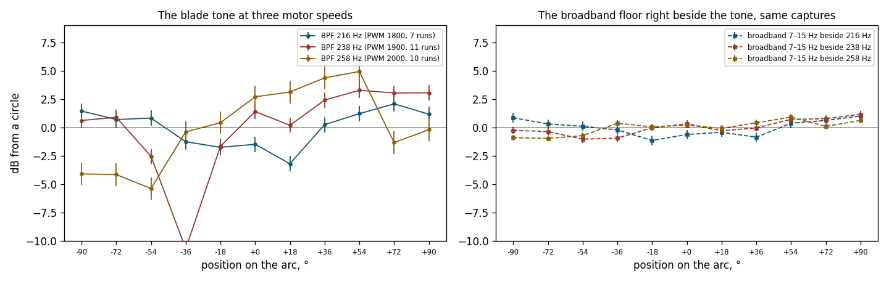
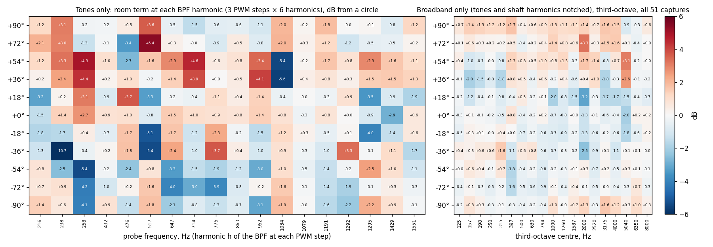
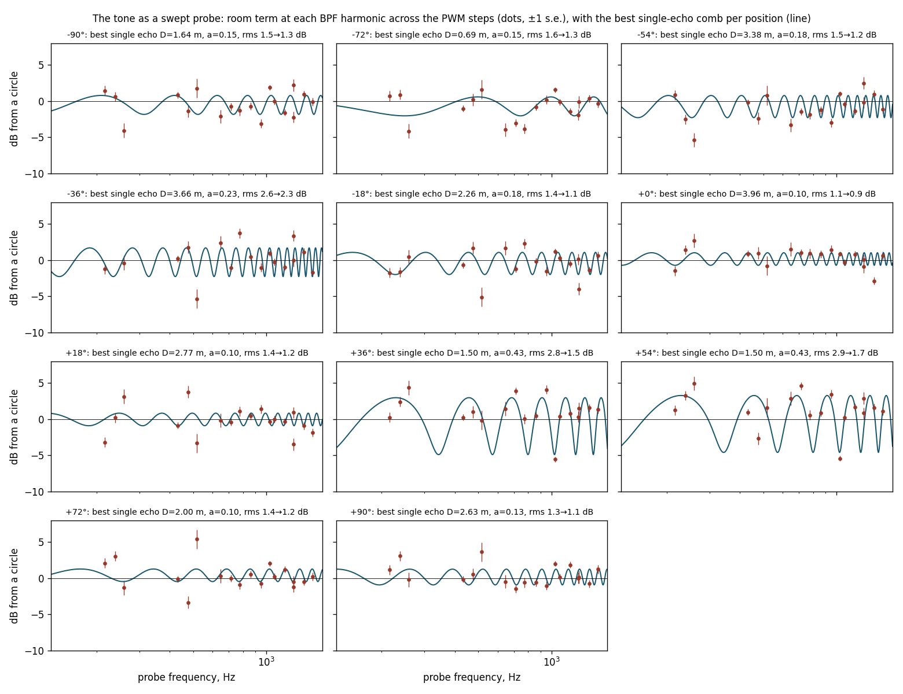

SoundVisualizer · arc validation · problems, literature, remedies · working draft
The blade tones are bent by up to 8 dB below 1 kHz; notching them leaves a smaller error that is still systematic and present in every band. What the arc-validation runs actually say once tones and broadband are separated, what the chamber literature says about each problem, and which remedies are possible. One chapter per problem, each ending in a verdict. Derived from docs/arc-validation-onepager.pdf and the September 2026 horizontal runs; the measurements and the cited PDFs govern where this report disagrees.
How to read this. Every chapter opens with an In short panel written for any reader: the problem, its likely causes, what can be done, and a verdict. The Specifics that follow hold the data, the figures and the quoted sources, page by page, for the specialist. The nine-line answer (§00), the campaign plan (§15) and the questions (§16) stand on their own; the appendices hold the literature summary, the source ledger and the fetch list.
Specifics · data, figures and sources
Every statement the one-pager makes is checked here against the new diagnostics (scripts/arc_validation_diagnostics.py, all numbers in docs/analysis/remedies-diagnostics.txt). Verdicts: holds, holds with a caveat, does not hold.
| Claim on the one-pager | Verdict | Evidence |
|---|---|---|
| "The arc is fine above 4 kHz." | holds | Broadband map ±1.3 dB from 4 kHz up (one cell +2.6 dB at +54°/5 kHz, one +1.9 at +36°/5 kHz); tone probes above 1 kHz within ±2 dB. Standard error of a position cell 0.2–1.0 dB. |
| "Below 2 kHz the room bends it by up to 8 dB." | caveat | True for the blade tones (−8.3 dB at −36°/238 Hz, +7.4 at +54°/258 Hz). Not true for the broadband: with tones notched, no third-octave cell below 2 kHz exceeds ±2.6 dB and 92 % of all cells are within ±1.3 dB. |
| "A sound wave that bounces off a nearby surface … wavelength here is 35–70 cm, so the surface is within about a metre" (500–1000 Hz). | holds | At 647/714/775 Hz the −72° cell reads −5.5/−5.1/−5.5 dB and +54° reads +4.0/+5.3/+2.1 dB: stable with frequency, as a short extra path gives. Single-echo fits: −72° extra path 0.68 m, +36°/+54° 1.50/1.49 m. Broadband beside the tone shows the same pattern (correlation 0.94–0.98). |
| "The 200–250 Hz column: the blade tone … only a large surface (wall, floor, table) reflects a wave that long." | does not hold | The pattern at 216, 238 and 258 Hz correlates only 0.41 between neighbours; a reflection from one surface within a few metres would give nearly the same pattern at all three (extra path 0.7 m → 4° of phase per 10 Hz). Whatever bends the tone at 238 Hz varies on a 10–20 Hz scale: long paths or room modes, or the source itself. |
| "The blue cell moves with motor speed because the tone slides through the cancelling frequency, the textbook sign of a reflection." | caveat | The move is real (−36° at 238 Hz, −72° at 258 Hz, nothing at 216 Hz). It is the sign of a frequency-selective transfer path, which a single nearby reflection is not. It is also what a modal room, or a tone-only source effect, would show. |
| "Blue on one side, red on the other: the surface is off-centre … the colours do not say which side." | caveat | Off-centre, yes. With the frequency dimension added the +36°/+54° reflector has an extra path of 1.5 m and an amplitude that needs a hard surface (0.35–0.43 of the direct wave at 1 m); no single plane fits all eleven extra paths (residual 0.9 m), so there are at least two surfaces. Which side each is on needs the arc radius (§14). |
| "White above 4 kHz: … a band at 4 kHz is 900 Hz wide, so a reflection cancels and adds many times inside it and averages out." | holds | This is exactly why the broadband map is white everywhere: a third-octave average over a comb. The same averaging is why the tone, a single line, is not white. |
| "Ten microphones agree within ±1.8 dB in every band … 811-1892 reads 2–6 dB too low from 125 Hz to 2.5 kHz." | holds | 811-1892: −2.1 to −5.8 dB, standard error 0.2–0.4 dB. Nine of the other ten are within ±2 dB in every band; 810-8901 reaches +3.0 dB at 500 Hz and 811-1896 +2.5/−2.3 dB at 800 Hz/3.15 kHz, each a single band. The mic term's standard error is 0.24 dB median, 0.57 dB worst. |
| "prop11–14 were measured with the arc turned around … correlation +0.79 to +0.98." | holds | Not re-tested; the mirrored fit is used throughout this report. |
| "With the arc flat and the axis vertical every microphone sees the propeller from the same angle, so the propeller cannot make one spot differ from another." | caveat | True for the mean flow field of an axisymmetric rotor. A rotor in a small room ingests whatever inflow the room gives it; a non-axisymmetric inflow makes the tonal loading noise non-axisymmetric while leaving the broadband alone. The data cannot exclude this at 238 Hz (tone ±8 dB, broadband beside it ±0.3 dB). §10. |
| "Foam only helps at 3 kHz. At 250 Hz the only fix is distance." | caveat | Half right. Thin foam does nothing at 250 Hz, but distance is not the only fix: averaging over motor speed, correcting with a measured transfer function, and low-frequency absorbers that are not foam all exist. Literature in §12–§13. |
| "The worst cells (+11 dB at −36°/250 Hz in prop7 …) are single tone-band cells in the first two runs where the blade tone sits on a band edge." | does not hold | prop7 spun at BPF 164 Hz at PWM 1900 where all other runs spun at 238–239 Hz; its tone was in the 157 Hz band, not on the 250 Hz band edge. prop7 belongs to a different speed and should be excluded from the 1900 fit, not explained. |
| "The 0° microphone (810-8897) never moved, so its M and the 0° P are known only as a sum." | holds | Still true. The fix is a rotation plan, §8. |
Companion figure prop18-pwm1900-floor-ripple.png: "cepstrum of ripple … peak at τ ⇒ reflected path longer by c·τ". | does not hold | Its peaks at 1.4, 2.8, 4.2, 8.4 ms are 1/(3·BPF), 2/(3·BPF), 1/BPF and the shaft period. With tones notched, the residual peaks still move with 1/BPF between speeds (1.49–1.66 ms at 216 Hz, 1.23–1.40 ms at 238 Hz). The figure should be retired. |
Specifics · data, figures and sources
The same twelve runs, but all five PWM steps and, in each capture, the blade tone and its harmonics located and separated from the rest. Four things were done: (1) tone levels at each harmonic and tone-free third-octave levels fitted separately with the one-pager's model, level = run gain + position term + microphone term; (2) the tone used as a swept probe, since three motor speeds × six harmonics give 18 probe frequencies per position between 216 Hz and 1.55 kHz; (3) standard errors from the least-squares covariance; (4) a cepstrum of the tone-free ripple. Runs at PWM 1200 (no tone; the motor barely turns) and prop7 at PWM 1900 (different speed) are excluded from tone fits.

With every multiple of the shaft frequency notched (±9 Hz below 1.1 kHz, ±35 Hz above), the position term over all 55 usable captures is within ±1.3 dB in 92 % of the 209 position × band cells (98 % within ±2 dB). The largest: +2.7 dB at +72°/2 kHz, −2.6 at −72°/397 Hz, +2.6 at +54°/5 kHz, +2.0 at −36°/315 Hz. Standard errors 0.15–0.45 dB. This is the polar the room gives a broadband source at this radius: usable to ±1.5 dB from 125 Hz up, with two positions (−72°, +54°/+36°) to watch in 400–800 Hz. It is a floor, not a clean sheet — 99 of the 209 cells exceed three standard errors, and the residual does not shrink with frequency (92.2 % of cells within ±1.3 dB below 3.15 kHz against 92.7 % above, worst 2.69 against 2.58 dB), so a reflection averaging out in a wide band is not the whole story.
Spread of the tone position term across the eleven positions: 0.9 dB at 216 Hz, 3.4 dB at 238 Hz, 3.8 dB at 258 Hz. Between 238 and 258 Hz the deepest cell moves from −36° (−8.3) to −72° (−7.8) and the highest from +36° (+5.2) to +54° (+7.4). Correlation of the eleven-position pattern between neighbouring probes: 0.41 (216↔238), 0.41 (238↔258), then 0.76 (647↔714), 0.59 (714↔775), 0.73 (863↔952), −0.92 (952↔1034). The room error is frequency-sharp at 240 Hz and frequency-smooth at 700 Hz.
Spread of the broadband-beside-the-tone term: 0.4/0.6/0.8 dB at 216/238/258 Hz against 0.9/3.4/3.8 dB for the tone; correlation with the tone pattern 0.52/0.62/0.86. At the third harmonic, 647/714/775 Hz: broadband spread 1.3/1.8/0.6 dB, correlation 0.94/0.98/0.68, with −72° reading −5.1 (tone) and −3.2 (broadband) at 714 Hz, +54° reading +5.3 and +3.5. At 700 Hz whatever bends the tone bends the floor beside it; at 240 Hz it bends the tone only, or only within a few hertz of it.
A one-echo comb fitted to each position's 18 probes: +36° extra path 1.50 m, amplitude 0.35, residual 2.4→1.3 dB; +54° 1.49 m, 0.43, 3.3→2.1 dB; −72° 0.68 m, 0.23, 2.3→1.7 dB. The other eight positions fit nothing better than 2–4 m at amplitude ≤ 0.23 with little improvement. An amplitude of 0.4 after a 1.5 m longer path needs a reflection coefficient near 1: a hard surface, not foam. Fitting one plane to all eleven extra paths fails (residual 0.9 m for any arc radius 0.6–1.5 m).

Second half of each 2 s capture minus first half, blade tone: −0.05 ± 0.36 dB over 352 mic-captures; harmonics 2–4: 0.0–0.2 ± 0.7–0.8 dB. The tone minus its position mean by the step's place in the run sequence (steps 3 s apart): within ±0.5 dB for the fundamental and ±1.0 dB for the fourth harmonic. Whatever recirculation does here, it is settled before the first capture and does not grow over the 15 s run.
(a) prop7's PWM-1900 step spun at BPF 164 Hz, every other run at 238–239 Hz; its 1800 and 1500 steps also differ. The telemetry says why: prop7 ran at 7.8–8.0 V and 0.2–3.9 A where every later run shows 12 V and 0.3–7.4 A, i.e. the bench supply was in current limit (Adam: the limit was raised afterwards). prop7 is a different experiment. (b) The PWM-1800 WAVs are 0.16–1.76 s long in nine of twelve runs, four of them too short to use. (c) PWM 1200 gives thrust ≈ 0 and no tone; PWM 1500 gives a 140 Hz tone in three runs only; prop18's PWM-2000 step reached no tone (1.9 A and 0.7 N at 11.9 V against 7.3 A and 4.0 N in every other run: the motor did not spin up for that step, the supply was not the cause). None of this is on the one-pager.

Specifics · data, figures and sources
The tone polar at 238 Hz has a −8.3 dB hole at −36° and +5.2 dB at +36°; at 258 Hz the hole is at −72° (−7.8) and the top at +54° (+7.4); at 216 Hz it is round to ±2.2 dB. The floor 7–15 Hz beside the tone is round to ±1 dB at all three speeds. Averaging the three tone polars leaves a tilt: −72°/−36° at −2.7/−3.3 dB, +36°/+54° at +3.4/+3.4 dB. Three readings fit these facts and the data cannot rank them: a room whose modes at 240 Hz are narrower than the 7 Hz gap to the sampled floor, so that a line spectrum sees ±8 dB where a 16 Hz average sees ±1; a strong reflection with a long extra path (a comb period of 60–110 Hz needs 3–6 m), which at 1 m radius cannot reach the amplitude a −8 dB notch requires unless several add up; or a propeller whose blade-passage tone is not axisymmetric because its inflow is not (Problem 8), including the possibility, raised in a 1974 abstract held only as such, that the inflow's turbulence itself produces narrow-band peaks that look like harmonics. The first two are the room; the third is the source. All three leave the broadband polar round, which is what is observed.
The closest analogue to our rig has the same problem and lives with it. NASA Langley's Small Hover Anechoic Chamber "is an acoustically treated facility with a cut-on frequency of 250 Hz and measures 3.87 m × 2.56 m × 3.26 m (L × W × H) from wedge tip to wedge tip" (Zawodny, Schiller, Pettingill & Medina, NASA/TM-20250009190, 2025, p. 10); its wedges "absorb 99% of incident sound energy above 250 Hz" (Weitsman, Stephenson & Zawodny, JASA 2020, p. 1326); its microphones "are located at a minimum of 10 rotor radii away from the rotor, which is in the geometric far-field" (Pettingill & Zawodny, NASA/TM-20250003316, 2026, p. 8), on a fixed vertical arc at 1.9–2.4 m. No NASA document reports a qualification traverse for it, and the blade-passage tones of the rotors tested there sit at or below its 250 Hz cut-on. Their tone levels are not read from bands at all: "The periodic noise components are extracted by calculating the RMS of the ensemble-averaged pressure time history over a specific number of shaft revolutions" (Weitsman 2020, p. 1327), the 2025 memorandum "discretizing the measured acoustic pressure time histories into data blocks corresponding to the rotor period of revolution, computing an average revolution acoustic time history, then repeating this averaged time history and subtracting it from the raw measured signal" (p. 14), with "all spectra ... plotted with a 16 Hz frequency resolution and ... corrected to a common arc distance of 1.91 m using spherical spreading" (p. 33). Residual harmonics between 400 Hz and 4 kHz are read there as turbulence ingestion: "The three most likely sources of turbulence ingestion in a facility such as SHAC are incident turbulence from the inlet of the facility, perpendicular blade vortex interactions, and flow recirculation generated by the wake of the rotor" (Pettingill & Zawodny 2026, p. 15).
A cuboid room with a loudspeaker check shows our numbers. Amazon's hemi-anechoic rotor room, calibrated with a loudspeaker, "is hemi-anechoic within ±1 dB above a blade passing frequency (BPF) harmonic of 2.2, but only within ±4 dB below that, primarily due to the onset of standing waves, which are a consequence of the nearly cuboidal shape of the chamber" (Nardari et al., AIAA 2019-2497, p. 2). That is the modal reading of Finding 2 in another lab's words, with the threshold expressed in harmonics of the BPF rather than in hertz.
How labs state the envelope instead of fixing it. The Perm aeroacoustic chamber reports "a free acoustic field within radius of 2 m for tonal noise and 3 m for broadband noise" (Palchikovskiy et al., AIP Conf. Proc. 2016, p. 2), two radii for one room by signal type, which is the tone-versus-broadband split of Fig. 1 written as a specification. TU Delft's plenum passes ISO 3745 above 250 Hz everywhere, while "the three next one-third-octave bands below 250 Hz, (125 Hz, 160 Hz and 200 Hz) only show acceptable values up to r = 1.5 m" (Merino-Martínez et al., Appl. Acoust. 2020, p. 12): validity as a frequency-and-distance pair. NASA's tunnel derived a per-microphone floor from the clearance to the wedges: "Treating this as a 1/4-wavelength yields a notional cut-on frequency of 175 Hz" (Zawodny & Haskin, AIAA 2017, p. 16). TU Berlin printed the caveat next to the plot: "the BPF band of the UBADRON partly falls below the cut-off frequency of the anechoic chamber" (Hochbaum et al., Quiet Drones 2026, p. 9). In Split's 2.8 × 1.7 × 2.05 m room "the lowest one-third-octave band we could measure was 250 Hz band in order to end the traverse 50 cm from the tips of acoustic wedges" (Russo et al., Euronoise 2018, p. 2229), and in a 2 m³ calibration box the ISO tolerance held only "between 79 and 89 cm" from the source (Garg et al., MAPAN 2019). None of the fourteen facilities read for this report subtracts a measured room error from rotor data; they exclude, restrict the distance, or caveat.
What one reflection does, and why a band hides it. The physics is stated the same way from a 1978 NASA report to a 2022 drone paper. For a microphone over a reflecting plane "The interference of the direct wave and the reflected wave at the microphone position is like a comb filter" (Rasmussen & Winberg, Quiet Drones 2022, p. 3), and in third-octave data "the frequencies coincident with the comb-filter minima are reduced by more than 20 dB, and the frequencies coincident with the comb-filter maxima are amplified by 6 dB" (p. 4). Pao, Wenzel and Oncley give the general direct-plus-reflected expression with a reflection coefficient and a spherical-wave correction (NASA TP-1104, 1978, Eq. 3–4, p. 16); the hard-surface limit of it is the peak/dip rule used in Finding 4, which this report derives rather than quotes. Cunefare's group showed that the qualification deviation "is due to interference between the direct and reflected components of the wave field" and varies "on length scales comparable to a fraction of a wavelength" (JASA 2003, p. 889), that "the deviations observed using broadband noise are unremarkable" on the same traverses (p. 890), and that resolving the pattern needs samples "of 15% of a wavelength at the frequency of interest" (p. 892). NPL's wedge-removal study says why a band is blind: "broadband noise deviated less than pure tones, which could be attributed to averaging of the interference between the limits of the frequency band being analysed" (Simmons, Jobling & Payne 2004, p. 51), so that broadband qualification is "over-tolerant of poor acoustic room performance" (p. 49); Winker and Stahnke saw the same at high frequency: "This situation occurs during pure tone qualifications and is not present in broadband qualifications due to signal averaging" (Inter-Noise 2016, p. 7). Nash's commercial chamber passed on pink noise and failed on tones, one tone giving a slope that was "a value that is physically impossible" and "suggests an acoustical cancellation occurring between the arriving wave front and a strong reflection from a nearby surface" (ICA 2019, p. 1348): "the chamber is absorptive but not anechoic" (p. 1349). That is Fig. 1 in other people's rooms: the tone sees the room, the band does not. The tolerances every one of these papers quotes from ISO 3745 are ±1.5 dB below 630 Hz, ±1.0 dB from 800 to 5000 Hz and ±1.5 dB from 6300 Hz up (Cunefare 2003, Table I, p. 882; Winker & Stahnke 2016, Table 1, p. 2), which the broadband map meets almost everywhere and the tone map fails by 5 dB.
Correcting a tone after the fact is the one thing the literature says cannot be done. "In practice it may be possible to correct the data for the comb-filtering effect as long as the source signal is broadband noise. However, if the source signal contains pure tone components, it will not be possible to do this correction" (Rasmussen & Winberg 2022, p. 5). NASA's static-test engineers knew it in 1978: hand-smoothing of ground-effect dips "will obviously be incorrect in cases where a strong tone is present" (Pao et al., p. 14). Their alternatives were geometric (flush-mounted microphones, "reducing the flush-mounted-microphone data by 6 dB and the raised-microphone data by about 2 dB to obtain a composite free-field sound pressure level spectrum", p. 13), analytic (a computed ground reflection from a known impedance), or cepstral: "A Fourier transformation of the logarithm of the spectrum results in a cepstral function in which interference maximums and minimums are represented as a single spike ... By removing this spike from the cepstral function and taking an inverse Fourier transformation, the result is a logarithm spectrum without ground effects" (p. 15). Pao et al. attribute that method to Miles, Stevens & Leininger 1977, which is not held; the sentence above is Pao's description of it, and it is valid, in their words, only for a hard surface and a broadband spectrum. Time gating does not rescue a low-frequency case either: "methods involving windowing of time responses have failed, mainly because at low frequency echoes from a scattering body are very difficult to separate from actuator responses" (Friot & Gintz, arXiv 2009, p. 3). None of these sources treats a per-direction correction of a tonal source; the environmental correction of the sound-power standards is signal-agnostic and one number per room (§13). What remains for a tone is to move it (the speed ladder), to measure the room's transfer function with a source that is not a tone (the sweep), or to change where the tone is measured.
Specifics · data, figures and sources
Stable with frequency and shared by tone and broadband: −72° reads −5.5/−5.1/−5.5 dB at 647/714/775 Hz in the tone and −2.6/−3.2/−0.6 dB in the floor beside it; +54° reads +4.0/+5.3/+2.1 and +2.8/+3.5/−0.1. Single-echo fits give an extra path of 0.68 m at −72° (amplitude 0.23) and 1.50 m at +36° and +54° (amplitude 0.35–0.43). The 952→1034 Hz sign flip at +36°/+54° (+4.1→−3.8, +4.3→−5.7) is a comb whose period is c/1.5 m ≈ 230 Hz passing through a null, which is what a 1.5 m extra path predicts. These are ordinary reflections from fixed surfaces, and the one-pager's reading of them stands. With the ring diameter of 1.68 m (radius 0.84 m; §14), the +36°/+54° pair of extra paths is satisfied by one plane 1.58 m from the hub whose normal points toward +47° on the arc, i.e. a surface about 0.75 m behind those two microphones. One delay at −72° cannot fix a plane; an extra path of 0.68 m fits a surface about 0.34 m behind that microphone or a compact object near the hub.
Specifics · data, figures and sources
The one-pager's third-octave map has ±3–4 dB at 3.15 kHz (+54° −4.4, −90°/−72° +2.9). In the tone-notched broadband map the same band reads −1.3 (+54°), +1.6 (+72°), −1.3 (+18°), +0.6 (−90°): the scatter halves once the tones are out, which says part of it was tone leakage into the band. What remains, ±1.5 dB, is at the scale of clamps and mounts (λ = 11 cm), and it is the band where the standard error is smallest (0.2 dB), so it is real.
The size-to-frequency rule and the mount evidence are in Problem 9 (§11): a 10 cm object reflects from 3150 Hz and a 35 cm one from 1 kHz (Rajmane & Baumann 2016, Table 1, p. 332); microphone-to-microphone standing waves appear "at separation distances that are integer multiples of one-half wavelength" (Burnett & Nedzelnitsky 1987, p. 140); "Sound reflection from the microphone support system should be carefully avoided" (ISO 26101-1:2021, §5.1.3.2, p. 5); and the UMIK-2's own 0° and 90° curves "differ only above a few kHz" (miniDSP manual, p. 15, vendor), so how each capsule is pointed starts to matter in exactly this band.
Specifics · data, figures and sources
811-1892's term after calibration: −2.1 to −5.8 dB from 125 Hz to 2.5 kHz, −0.4 to −1.4 dB above, standard error 0.2–0.4 dB. Its calibration file carries a Sens Factor of −10.63 dBFS, the least negative of the eleven (others −11.2 to −13.71). The one-pager's diagnosis, that the file does not match the capsule, is consistent with a flat part (about −2.5 dB, a sensitivity error) plus a shape part (deeper below 1 kHz, a response error). The other ten agree to about ±2 dB; that spread is itself larger than the 0.5 dB the files promise, and it is what limits a directivity measurement once the room is fixed.
No published test of a UMIK against a class-1 reference exists, in arXiv, MDPI, the DEGA/Inter-Noise/Euronoise proceedings or the open web (thread D's search log is in RETRIEVAL-D.md). miniDSP's own documents say the UMIK-2 capsule is a "1/2" Low noise Pre-polarized condenser on 60UNS thread" (product brief, p. 2), that "Each UMIK-2 has a unique calibration file for measurement accuracy" (manual, §1) and that the second file is "a 90-degree calibration file that is calculated from the on-axis response" (manual, §4), i.e. not measured. A tolerance is stated only for the older UMIK-1, "20 Hz - 20kHz +/-1dB with calibration loaded" (UMIK-1 brief, p. 1); for the UMIK-2 and for its sensitivity figure no accuracy is published at all. What comparable low-cost microphones do against class-1 meters: "the mean difference of less than 2 dB compared to Class 1 sound level meter" for a MEMS node (Risojević et al., Sensors 2018, p. 1), and, after a single-point 94 dB calibration, a residual growing from 0.1–0.4 dB below 1 kHz to 2.6 dB at 8 kHz against a Type-1 meter (Mydlarz, Salamon & Bello, arXiv 2016, Table 3, p. 18). A ±2 dB spread across our other ten serials is therefore what this class of instrument delivers, not a fault to hunt.
Offset and shape are two different errors with two different tests. Picaut et al. separate a correction "applied to the entire temporal signal, without distinction of frequency or amplitude" from one that also corrects "linearity defects in level and frequency" (Sensors 2020, p. 14); Mydlarz's pipeline implements exactly that split, an inverse-response filter followed by "An offset adjustment is then applied in order to match the 94dBA SPL input level" (p. 16). The standards split the same way: IEC 60942 "specifies the performance requirements for three classes of sound calibrator: class LS (Laboratory Standard), class 1 and class 2" (Scope), a calibrator giving the offset; IEC 61094-6's electrostatic actuator is "a technique for detecting changes in the frequency response of a microphone" (Scope), giving the shape; and IEC 61094-8 comparison calibration gives both, "Substitution calibration describes the process where reference microphone is first used to determine the sound pressure at specific point inside a free field and is then replaced by microphone under calibration" (Garg et al., MAPAN 2019, p. 358), with an expanded uncertainty of 0.30–0.52 dB across 125 Hz–20 kHz in a 2 m³ box (Table 4, p. 366; the abstract rounds this to "± 0.36–0.52 dB", p. 357) and bilateral agreement "less than 0.16 dB in the entire measurement frequency range" for a laboratory microphone (p. 368). 811-1892's signature, a flat −2.5 dB plus a shape error below 1 kHz, is the offset-plus-shape case these documents anticipate.
Drift is not the explanation for a 4 dB error. NIST's fifty-year record of 484 calibrations of 76 laboratory condenser microphones finds that "For each of these microphone types, the average drift rate is not significantly different from zero" (Wagner & Guthrie, J. Res. NIST 2015, p. 164); for cheap capsules the reported effects are a temperature coefficient of "<0.017dB/°C" (Mydlarz 2016, p. 8, reporting Scheeper et al. 2003, which is not held) and "a reduction of acoustic sensitivity of MEMS microphones during the initial running-in phase, on the order of 1–2 dB on a time period of 4 months" (Picaut 2020, p. 15, reporting Bartalucci et al. 2018, not held). A file that belongs to another unit, or a capsule that was never what the file says, fits 811-1892 better than any drift figure in the literature. The rotation plan of Problem 6 is the metrological "designed intercomparison" of Cameron, Croarkin and Raybold's NBS Technical Note 952 (1977), where "A direct check on the limiting mean of the measurement process is provided if a known weight is calibrated regularly as if it were an unknown test weight" (p. 12): one trusted serial carried round the arc is our check standard.
docs/mic_arc.md already records. One curve per capsule then covers the flat arc and the vertical arc alike. Aiming need not be precise, since the 0° and 90° files "differ only above a few kHz, due to the high-frequency directionality of the microphone" (p. 15). Each capsule must wear its own arc clamp and grid during the calibration, because ISO 26101-1 treats a microphone as one object "taking into account any supplementary equipment connected to it, such as the protective grid and mounting arrangement" (§5.1.2.1, p. 3); a different bracket would place its error in the 3 kHz band this report already has a problem with.Specifics · data, figures and sources
The BPF at PWM 1900 is 238–239 Hz, 14 Hz below the 224/282 Hz band edge pair's upper boundary, so with a 4096-point Hann window (11.7 Hz bins, ±2-bin main lobe) part of the tone's energy is always shared with the 200 Hz band; a 1 % speed change moves 2.4 Hz. The one-pager's 1.5–2.3 dB run-to-run scatter in the 200–250 Hz bands against 0.6–0.8 dB elsewhere is this. Worse, there is no speed channel: telemetry.csv has rpm = 0 in every run, so the BPF had to be read from the audio. prop7's different speed went unnoticed because nothing recorded it; the telemetry's voltage column (8 V instead of 12 V) would have flagged it, had anyone looked.
A band edge is a slope, not a wall. IEC 61260-1:2014 defines band-edge frequencies as those "such that the exact mid-band frequency is the geometric mean of the lower and upper band-edge frequencies" (§3.8, p. 9), which puts our edge at 224 Hz, and notes that narrow-band outputs "can be combined to approximate the band level indicated by a filter of wider bandwidth" (§5.4.2 Note 1, p. 13), which is what an FFT-then-sum does. Its own tolerance table is not in the retrievable preview; the technically aligned ANSI S1.11-2004 (full text, incorporated by reference in 49 CFR 227) specifies "the discontinuous changes in minimum and maximum relative attenuation at the bandedge frequencies" (§4.4.4, p. 8) and requires a class-1 third-octave filter to attenuate a tone at its nominal edge by between 2.0 and 5.0 dB (Table B.1, p. 15). A tone 14 Hz inside the 250 Hz band, with an FFT-sum that behaves like a brick wall, is therefore either all in or all out depending on a 1 % speed change, which is the +11 dB cell.
Nobody who measures small rotors reads tones from third-octaves. ISO 5305:2024 says "by computing the narrow-band noise spectra, the tonal noise components can be extracted. However, requirements for signal processing and evaluation of the measured data are not specified in this document" (Introduction, p. vi). The concrete recipe is NASA Langley's: revolution-synchronous ensemble averaging with a tachometer, whose RMS gives the tone and whose subtraction gives the broadband (Weitsman 2020, p. 1327; Zawodny, Boyd & Burley 2016, p. 7; Whelchel 2023, p. 94: "The periodic and random noise components are separated in the time domain using a phase average interpolation technique", where "First the rotor position is tracked in time using the measured pulse from the RPM signal acquired with the laser diode"). The tacho is the point: without a speed channel our version has to find the fundamental in the audio, as the diagnostics script now does. Polars are then plotted at the harmonic, not the band: Zawodny and Haskin plot "BPF SPL (dB re. 20 μPa)" against elevation for three rotor speeds (AIAA 2017, Fig. 18), and Alkmim et al. show "the spectral SPL in polar coordinates with respect to elevation for three rotor speeds at their respective BPFs" (JASA 2022, p. 2740). Cunefare's chamber traverses used "a narrow band-pass filter (bandwidth = 1/20 of the center frequency)" on tones (JASA 2003, p. 886) and concluded that broadband excitation "is of dubious value for qualification purposes in chambers where sources with pure tone components are to be tested" (p. 892).
Speed stability and averaging time have numbers. On NASA's rig one rotor held "rotation rate fluctuations on the order of ±3 RPM" and another "on the order of ±20 RPM" in the same session (Zawodny, Boyd & Burley 2016, p. 8); Weitsman's rotor showed "minimal fluctuations in the RPM" until recirculation set in (2020, p. 1327), and a hovering consumer quadrotor's speed has a "normalised standard deviation of the rotational speed" of about 0.5 % in still air (Heutschi et al., Acta Acustica 2020, p. 6, Table 5). Random uncertainty of a spectrum: a 2 s average at 5 Hz resolution gave about −1.1/+0.9 dB and a 7 s average about −0.55/+0.49 dB (Weitsman 2020, pp. 1328–1329, 1333); a 5 s average −0.66/+0.57 dB (Zawodny 2016, p. 7); and "Even at the lowest FFT averaging window of 2 seconds with 15 records the uncertainty is under 1 dB" for the blade tone (Whelchel 2023, p. 82). Our 2 s captures are at the short end of what these labs accept, and they accept it for tones, not for broadband below 1 kHz.
meta.json. Reject captures whose BPF is more than 3 % off the run median.Specifics · data, figures and sources
The model level = gain(run) + P(position) + M(microphone) has 34 parameters per band on 132 observations, and the twelve core runs determine only 28 of them. Two of the six missing directions are the harmless overall offsets that the zero-mean constraints absorb. The other four are real, and they have a simple structure: draw a line between every position and every microphone serial that ever sat there, and the graph falls into five disconnected groups.
| group of positions | tied together by serials |
|---|---|
| −90°, +90° | 810-8904, 811-1897 |
| −72°, −54°, +54°, +72° | 810-8901, 810-8903, 811-1892, 811-1896 |
| −36°, +36° | 810-8893, 810-8900 |
| −18°, +18° | 811-2310, 811-2321 |
| 0° | 810-8897 (never moved) |
The ± pairing comes from the four turned-around runs; the one four-position group comes from the single swap after prop10. No microphone ever sat in two different groups, so the level offset between one group and another is not observable. Verified directly on the data rather than inferred from the rank: at 794 Hz, adding 1.0 dB to the −36° and +36° position terms and subtracting 1.0 dB from the two serials that serve them leaves the residual root-mean-square unchanged at 1.5012 dB, bit for bit. The two solutions are indistinguishable. arc_error_map.py uses numpy.linalg.lstsq, which returns the minimum-norm solution, so the split it reports is a convention.
What survives, and what does not. Every contrast within a group is measured. That includes the report's largest broadband feature, −72° against +54° at 794 Hz, which are 9.3 dB apart and sit in the same group, and the ±36° tone contrast. The speed dependence of the tone pattern also survives untouched, because the grouping is identical at every speed, so a pattern that changes between 216, 238 and 258 Hz cannot be an artefact of the convention. What is not measured is any comparison between groups, and therefore each position's value relative to the arc mean. The scale of the ambiguity is the scale of the microphone terms themselves, ±3 dB across the set and −5.8 dB including 811-1892, against a broadband residual of ±1.3 dB. Standard errors, which describe scatter rather than identifiability, remain as reported: P median 0.34 dB, worst 0.98 dB; M median 0.24 dB, worst 0.57 dB. They do not describe this problem and never did.
The earlier reading of this chapter named two symptoms of the same cause: the 0° microphone never moved, so M(810-8897) and P(0°) are one number, and 811-1896 sat at −72° in eight of twelve runs so its term mirrors that spot's room cells. Both are instances of the group structure above, which is the general statement.
Specifics · data, figures and sources
The propeller cannot be its own echo probe. With every shaft harmonic notched and interpolated, the cepstrum of the remaining ripple still peaks at 1.23–1.40 ms in every microphone at 238 Hz, at 1.49–1.66 ms at 216 Hz and at 2.54 ms (the second rahmonic) at 258 Hz: these are 1/(3·BPF) and its multiples, residue of the harmonic comb, identical in all eleven microphones. A reflection would sit at one delay independent of speed and differ from microphone to microphone. The one-pager's plan, a loudspeaker on the stand with short bursts, is the right instrument; the details decide whether it works.
The sweep does not need synchronised clocks, and resolves far finer than we need. Farina's exponential sine sweep is "very robust to minor time-variance of the system under test, and to mismatch between the sampling clock of the signal generation and recording" (AES 108, 2000, p. 1), unlike MLS, which "requires that the excitation signal is tightly synchronised with the digital sampler employed for recording the system's response" (p. 1), and it gives "a S/N improvement of 60 dB or more in comparison with the generation of a single impulse having the same maximum amplitude" (p. 6). His 2007 follow-up says it outright: "a tight synchronization between the playback clock and the recording clock is not required" and "even if two completely independent hardware devices are employed, and no clock synchronization is employed, usually the impulse response obtained is perfectly clean and without observable artifacts" (AES 122, 2007, p. 13). The deconvolved arrival is a bandwidth-limited pulse, with "a number of damped oscillations both before and after the main peak. This is due to the limited bandwidth of the signal" (p. 5), so a 20 Hz–20 kHz sweep resolves arrivals to tens of microseconds, against the 0.6–4.4 ms we need; and "the preferred way for improving the signal to noise ratio is not to average a number of distinct measurements, but instead to perform a single, very long sweep measurement" (p. 14). Rajmane and Baumann did the equivalent with sine bursts, "analyzed in time domain at very short interval, as small as 60 μsec" (DAGA 2016, p. 332), and matched lags of 3.5, 2.3 and 12 ms to measured extra paths of 1.2, 0.7 and 4 m (Table 3, p. 332): "The distance of reflecting object from sound source can be identified by emitting sine impulse and measuring the time lag of reflected sound on the measurement path" (p. 333). Each microphone's own response carries its own delays, so the UMIK-2s' independent clocks are not an obstacle to this step.
Turning delays into a surface needs known positions, not synchronised microphones. Dokmanić and colleagues recover a room from echoes with "the minimal number of microphones (four microphones in 3D)" (PNAS 2013, p. 1) placed arbitrarily, "as long as we know their pairwise distances" (p. 5), having "measured the distances between the microphones approximately with a tape measure" (p. 5), and note that the source can be located "if the loudspeaker is not synchronized with the microphones" (p. 3). Antonacci and colleagues ran a real-room test in which "No effort was made to synchronize the recorded signals with the input stimulus" (IEEE TASLP 2012, p. 2693), locating the source from direct-path time differences so that "the TDOAs of the direct-paths are used to localize the acoustic source and consequently estimate the propagation time of the direct sound from the source to a reference microphone" (p. 2686), but with an array "whose relative geometry is assumed known" (p. 2685). Every spherical-array paper in the held set (Sun 2012, Mabande 2013, Lovedee-Turner & Murphy 2019, Sprunck 2022, Hadadi 2024, Tervo 2013, Meyer-Kahlen 2022) uses one device with one clock; Lovedee-Turner's assumptions start with "Source-receiver distance and room temperature are known a priori" (2019, manuscript p. 1). None addresses eleven independently clocked microphones, which is why the plan reads delays within each microphone and takes the geometry from a tape measure. Hadadi's finding that "reflections with high amplitudes, i.e. 0.4 with respect to the direct sound or higher, are easier to detect" (arXiv 2024, p. 5) is good news for the +36°/+54° echo, whose fitted amplitude is 0.35–0.43.
Why the propeller's cepstrum cannot name the surface, and what the standard fix is. Bogert, Healy and Tukey's 1963 paper is not held; what follows is Oppenheim and Schafer's account of it, quoted from their paper: an echo makes the log spectrum periodic so that "C(f) viewed as a waveform has an additive periodic component whose" fundamental is the echo delay (IEEE SPM 2004, p. 95), but "The problem of pitch detection is very similar to detecting echo times" (p. 97): a harmonic series at f0 gives the same peak at 1/f0. Bogert's remedy was liftering, "linear filtering of the log spectrum, as a way of emphasizing the periodic component of the log spectrum so as to enhance the detectability of echos" (p. 97), and in machine diagnostics Randall removes the known periodic family first: "Whole families of uniformly spaced harmonics or sidebands can be removed by removing a small number of rahmonics in the cepstrum" (Surveillance 7, 2013, p. 12–13), so that "the effects of echoes in a measurement (eg a double hit with a hammer) can be neutralised when curve-fitting the cepstrum because the corresponding rahmonics can be eliminated by a comb lifter" (p. 11). Finding 6's peaks at 1/(3·BPF) are rahmonics of the propeller, exactly the case these authors describe; the loudspeaker has no harmonics to lifter away. The primary sources arrived through Adam's proxy after the threads had run and say the same with the mathematics. Childers, Skinner and Kemerait open with the scope, "cepstrum techniques are suited for the analysis of data that contain echoes (wavelets) or reverberations of a fundamental wavelet" (Proc. IEEE 1977, p. 1428), derive that a single echo makes the log spectrum "contain cosinusoidal ripples" whose quefrency is the delay (p. 1429, Eq. 6–9), and state the condition our sweep must meet: the echo peaks "will be detectable provided the log" spectrum of the wavelet itself is quefrency-limited to less than the echo delay (p. 1430), which a short loudspeaker impulse satisfies for a 0.6 ms echo and a 6-inch propeller's harmonic-rich spectrum does not. They also carry the cautions: the logarithm is a poor whitener "when the echo amplitude is large" above 0.5 (p. 1430, reporting Cohen), and windowing the log spectrum "raises the echo detection threshold by around 12 dB" (p. 1437). Their lifter taxonomy is the one the report uses: "The notch lifter has been frequently referred to as a comb lifter in the literature" (p. 1431). Randall's 2017 journal text keeps both passages quoted above from the 2013 version word for word (MSSP 97, pp. 8 and 13–14) and adds nothing on rooms; the "double hit with a hammer" sentence exists only in the 2013 version, which is why it is cited there.
Aiming at the suspect is how qualification papers found their reflectors. Cunefare's group chose one traverse because "The traverse toward the door was selected anticipating that the structure of the wedge basket support and gaps around its perimeter might generate reflections" (JASA 2003, p. 887), and used the fitted acoustic-centre offset as a flag: "these two cases of excessive source offset correspond to traverses with poor performance with respect to the tolerance bounds" (p. 891). Rizzi's NASA room failed only near a corner, where "The excess deviations were attributed to long wavelength sound reflecting from the corners of the room" (RASD 2013, PDF p. 10); Nash covered a floor grating that "is still capable of reflecting high-frequency sound" (ICA 2019, p. 1343); Winker and Stahnke point at the rig itself: "A testing stand or rig is required to qualify most anechoic chambers" and it "causes small deviations to appear in the measurements" (Inter-Noise 2016, p. 7). Fitting a reflector's position from level data alone, without timing, is not something any retrieved source does: the ground-impedance "template" methods fit the surface's impedance with the geometry known (Attenborough, EuroNoise 2015, pp. 1785–1789), never the reverse.
Specifics · data, figures and sources
Three facts bear on it. The blade tone's position pattern at 238 Hz is ±8 dB while the broadband beside it is ±0.3 dB; the pattern turns with the room, not the arc; and it changes with speed. A room-fixed inflow distortion (a wall on one side, the stand, a table) would produce a room-fixed, tone-only asymmetry, which is two of the three; whether it can change as fast with speed as the data do is not known from the data. Recirculation as such is not seen: no growth inside 2 s captures, no trend over the 15 s run (Finding 5). The microphones are in the propeller plane, i.e. in the inflow, at an unknown radius.
Recirculation raises harmonics, and it shows up as time dependence. In NASA's small hover chamber the higher harmonic content that appears seconds into a run "is not indicative of what a rotor in hover outdoor would emit, but is instead an artifact of testing within the confined space of an anechoic chamber" (Stephenson, Weitsman & Zawodny, JASA 2019, p. 1154). At Virginia Tech "The BPF and its harmonics are all shown to increase by at least 7 dB with increasing averaging time suggesting that the turbulent wake is being reingested" and "the noise appears to be converging towards a steady state after approximately 20s of run time" (Whelchel, PhD 2023, p. 82). At VKI, with the wake vented into a second room, "The spectrum does not reveal any rise in either tonal or broadband noise levels over time" (Gallo et al., Acta Acustica 2025, p. 7). Our Finding 5 (no change inside 2 s, ≤1 dB across the 15 s run) puts this rig in the settled regime for the fundamental, but says nothing about whether the settled inflow is symmetric.
The reversed-rotation test is the published way to tell rig from rotor. On the same Tyto 1585 stand, "Reversing the sense of rotation revealed that even modest geometric asymmetries, here the support pylon, can shift directivity by up to 4 dB" (Fasulo et al., Aerospace 2025, p. 24). An asymmetry that flips with the sense of rotation belongs to the flow around a fixed obstacle; one that stays belongs to the room's acoustics or to the rotor.
The symmetry the one-pager assumes is an assumption in the literature too. NASA's small-rotor papers state it as a premise: "An azimuthal array was not employed as the acoustic emissions of an isolated rotor in hover should be symmetric" (Weitsman, Stephenson & Zawodny, JASA 2020, p. 1326, repeating Stephenson 2019, p. 1153); Nardari's analysis of Amazon's room proceeds "assuming an axisymmetric acoustic field" (AIAA 2019-2497, p. 9). None of the drone-noise papers read for this report has measured azimuthal symmetry of a static rotor in a small room. The static-fan literature of the 1970s did, because it had to explain why fans were louder on the test stand than in flight, and it found the stand. Hanson's blade-pressure study of the QF-1B fan: "rig interference, which is roughly an equal contributor to the distortion, acts mainly at the bottom of the inlet. The source of rig interference appears to be the support structure which is located behind the inlet lip underneath the fan" (NASA CR-2899, 1977, p. 1); "The RMS distortion was 2 to 3 times stronger at the bottom than at the top" (p. 24); and, with a deliberate blockage plate, "The localized blockage causes a noise directivity pattern which is not symmetric with respect to the fan axis of rotation" (p. 21). Hodder linked "inflow distortion phenomena such as ground vortex, atmospheric turbulence, and teststand structure interference to the generation of fan tone noise at the blade passing frequency" (NASA TM X-73183, 1977, p. 1) and kept the inlet "cantilevered 5.1 fan diameters forward of the test-stand-support struts" (p. 3); an inflow-control device gave "about a 5 dB reduction in blade passing tone and about 10 dB reduction in multiple pure tone sound power" (Woodward et al., NASA TM-73855, 1978, p. 2); Homyak's engine stand "positioned the engine inlet greater than 3.4 diameters from any facility or ground structure" (NASA TM-83349, 1983, p. 5). A stand or a wall on one side of a static rotor changes the blade-passage tone by several dB and makes its pattern one-sided. Our propeller blows upward, away from the stand, so its inflow comes from below, through and around the stand's body and beam; that is Hanson's "support structure which is located behind the inlet lip" in a different orientation. The microphones sit in the plane where thickness noise dominates and where, in NASA's data, "The SPL of the BPF is also greater in the rotor plane, whereas the broadband noise levels are greater outside of the rotor plane" (Weitsman 2020, p. 1329).
What would tell the two apart. The recirculation papers agree that unsteady inflow leaves the fundamental nearly alone and raises the harmonics ("the first harmonic of the blade passage frequency is relatively unaffected", Stephenson 2019, p. 1154; "The first two BPF tones are almost unaffected", Nardari 2019, p. 11), so a defect concentrated at the fundamental with quiet harmonics argues for the room and against inflow. Fasulo's reversed-rotation test on our stand model found the azimuthal scatter growing from 1 dB at 3000–5000 rpm to "about 3 dB at 6000 rpm and 3–4 dB in the 7000–8000 rpm range" (Aerospace 2025, p. 11), because "the pylon supporting the isolated propeller is offset to the left side of the array" (p. 10), and concluded that "rotation sense can dominate the apparent non-uniformity of the acoustic field whenever structural or environmental asymmetries are present" (p. 12); they excluded the shadowed sector rather than correct it: "Measurements taken within the 0°–90° sector will not be analysed" (p. 19). Their recirculation-free geometry is quoted for the record: "The rotor plane is situated approximately 6 D above the floor and directs its flow parallel to it, while the nearest wall along the wake axis lies more than 12 D downstream" (p. 18); ours is not known. Bristol's ground-effect study gives the cleanest published rule for telling the two apart: a broadband change that does not move when the surface moves is reflection, while tones that scale with proximity are aerodynamic ("remains the same in both IGE and OGE positions" for the broadband; harmonics "the result of increased unsteady loading noise", Hanson et al., JSV 2023, pp. 10, 20). In our data the tone pattern moved with frequency and the broadband did not move at all, which is the aerodynamic signature by this rule, with the caveat that their surface was a plate under the propeller, not a stand in the inflow. A third reading exists in the literature only as a meeting abstract, held and quoted as such: Hanson reported in 1974 that inlet turbulence of a static fan is "highly anisotropic" and gives noise "partially coherent with spectrum peaks which are so narrow as to be difficult to distinguish from true harmonics", so that "this narrow-band random mechanism explains spectrum peaks which have previously been described as harmonic noise due to fixed inflow distortion" (J. Acoust. Soc. Am. 55, S3–S4, 1974, abstract only; an outdoor engine-inlet study, no data in the abstract). It is a reminder that a tone-only, room-fixed anomaly need not be a fixed obstacle; it decides nothing for our rig. Whelchel's substitution is the model for our loudspeaker test: "White noise was radiated by a Bruel and Kjaer omnidirectional source" with and without the suspect surface, so that the fixture's response is measured with no aerodynamics in it (PhD 2023, p. 65).
Specifics · data, figures and sources
Nothing yet: every validation run had the arc flat. In the vertical configuration the −90° and −72° microphones sit near the floor and look at the propeller past the stand; the room error measured here does not transfer, because each microphone's path to the walls, floor and ceiling changes. The one thing that does transfer is the method: the horizontal fit separated room from microphone because the source was symmetric; vertical, the source is not symmetric over the arc, so the room term can no longer be fitted from propeller data alone. It has to come from the loudspeaker.
A microphone at a height over a floor is a comb filter, and tones cannot be un-combed. "The interference of the direct wave and the reflected wave at the microphone position is like a comb filter" (Rasmussen & Winberg 2022, p. 3), first dip at c/(4h), first peak at c/(2h), "reduced by more than 20 dB" and "amplified by 6 dB" in third-octaves (p. 4); the only tone-proof arrangement they find is a flush-mounted ground microphone, where "both broadband noise sources and pure tone sources can be measured, but with a 6 dB higher level than for the free-field situation" (p. 10). The same chamber run with and without its floor wedges: "the difference in the measured SPL can be as significant as 10 dB" between two adjacent near-floor microphones at the BPF, so "the ground reflections can change the original spectral characteristics, especially at low frequencies" (Ma et al., Quiet Drones 2022, p. 8). A 2.5 × 2.5 m foam patch of 7 cm under a drone left the reflection "minimized during measurements but not fully suppressed, especially at low frequencies" (Alkmim et al., JASA 2022, p. 2737). Bristol's ground-effect study puts the reflection where our low elevations will look: "At θ = 50°, the GE configuration exhibits a significant increase in TSSPL by approximately 4.0-8.0 dB for frequencies above 1000 Hz", while "this increase is absent at θ = 90°, where the sideline region does not experience reflections from the ground plane" (Jawahar et al., Sci. Rep. 2025, p. 9). NASA's answer for its arc was height: the rotor plane at 2.29 m above the wedge tips, "which corresponds to half of the room height" (Zawodny & Boyd, AHS 2017, p. 2). ISO 5305 keeps a hovering vehicle off the floor by "the height of the UAS to the ground shall be at least the maximum of" 1.2 m and two vehicle diameters (§6.3, p. 6) and wants microphones "on acoustically treated support to minimize reflections" (§7.3.1, p. 8).
The closest published analogue of the vertical arc, fetched by Adam after the threads ran. Bristol's ground-effect study put 23 microphones "on an arc positioned axially and centred on the propeller hub at a distance of 1.75 m" (Hanson, Kamliya Jawahar, Vemuri & Azarpeyvand, JSV 2023, p. 4), from 40° above a rigid plate through the plane of rotation to 150° behind it, in a chamber "fully anechoic from frequencies over 160 Hz" (p. 3), with the support strut kept about two diameters from the propeller plane. Their split of the two effects is the tool Problem 8 needs: the broadband rise in the reflection zone "remains the same in both IGE and OGE positions" (p. 10), i.e. it does not change with the plate distance, and the paper attributes it to reflection, "The dominant mechanism responsible for this increase is attributed to the acoustic reflection from the ground plane" (p. 20); the extra harmonics scale with proximity and are aerodynamic, "the result of increased unsteady loading noise due to enhanced local turbulence resulting from propeller-ground downwash flow interactions" (p. 20), and "The flow interactions between the propeller and ground diminish gradually as" the distance grows, smallest at four radii (p. 8). In numbers: "the OASPL increases in magnitude within the reflection zone by roughly 6 dB" (p. 11), the in-plane microphone is the least affected, "The reflection effects are smaller at this observer location due to the shallow angle of incidence required for sound waves to propagate in this direction" (p. 10), and behind the plate "The reduction of noise in the shielded zone can be attributed to the shielding effect of the ground plane" (p. 11), 10–20 dB. Their recording length was bounded empirically against recirculation: "The results indicated that a 16 s sampling time was sufficient for collecting microphone data" (p. 4). For our vertical arc this says: expect the low elevations to read high by several decibels from the floor regardless of how far the floor is, expect the in-plane microphone to be the cleanest, and expect any extra harmonics to be aerodynamic and to fade with height.
The stand. On the 1585 stand the pylon "is offset to the left side of the array" and shades one microphone (Fasulo 2025, p. 10–12); the authors excluded the sector rather than correct it (p. 19). Which of our elevations look through the stand is a tape-measure question.
Mounts, clamps and the capsule itself, the 3 kHz story. ISO 26101-1 requires that "Sound reflection from the microphone support system should be carefully avoided" (§5.1.3.2, p. 5) and treats the microphone as one object with its fittings, "taking into account any supplementary equipment connected to it, such as the protective grid and mounting arrangement" (§5.1.2.1, p. 3). Rajmane and Baumann's rule from their steel-plate tests is that a "reflecting object is identified, when length of side of square object is greater than or equal to wavelength of tonal excitation frequency" (DAGA 2016, p. 332): a 10 cm plate appears at 3150 Hz and a 35 cm plate already at 1000 Hz (Table 1, p. 332; the re-read corrected the one-pager's 1.25 kHz), and their remedy is to find it and move it, "the object can be shifted to different safe location" (p. 333). In a 5.4 m³ chamber the NBS calibration service saw separations that "correspond reasonably closely to the wavelength for 3.15 kHz" and that "Standing waves due to reflections between the microphones themselves will also produce maxima or minima at separation distances that are integer multiples of one-half wavelength" (Burnett & Nedzelnitsky 1987, p. 140). Even in NASA's chamber the mesh holders near the rotor gave a rise above 2 kHz "attributed to acoustic reflections off the mesh holder apparatus" (Weitsman 2020, p. 1333), and "A testing stand or rig is required to qualify most anechoic chambers" is Winker and Stahnke's explanation of high-frequency failures (2016, p. 7). The capsule adds its own: "The ratio between the pressure at the diaphragm and that of the undisturbed sound field is a function of the ratio between the microphone diameter and the wavelength" and "The influence of protection grids is generally very low below 1 kHz, but it increases significantly with frequency" (Brüel & Kjær, Microphone Handbook vol. 1, 2019, p. 2-45–2-46, vendor). miniDSP's own guidance is to "always point the microphone directly at the sound source and use the normal (0-degree) calibration file" (UMIK-2 manual, p. 14, vendor), noting that "the two calibration files differ only above a few kHz, due to the high-frequency directionality of the microphone" (p. 15): orientation is irrelevant at the blade-passage band and matters exactly where the 3 kHz scatter is.
Specifics · data, figures and sources
The broadband polar is already round to ±1.5 dB at 250 Hz (Finding 1). Treatment is therefore not needed for broadband directivity at this radius. It is needed if the tone error is the room's modes and the ladder average (Problem 1) does not converge, or if tonal levels at a single speed must be trusted without correction.
Depth is the price, and it is a quarter wavelength. The rule is Beranek's, from 1945: "the lowest frequency at which good absorp[t]ion is obtained, is that for which the length of the wedge equals approximately one-fourth of a wave length" (OSRD 4190, §III.D.5); his short high-density wedge "has a cutoff frequency of about 250 cps for a depth of 15 inches" (Summary §7), 38 cm. Bonfiglio and Pompoli's optimisation for 100 Hz finds that "a wedge length greater than 85 cm is required" for resistive materials (JASA 2013, p. 288); Jiang's flat-wall alternative "achieves a smaller total depth for the cut-off frequencies ranging from 100 Hz to 250 Hz" (JSV 2016, p. 139), about 30 cm at 250 Hz read off their Fig. 7, and they explain what the cut-off buys: "the 99% energy absorption means 10% pressure reflection, which is still very large" (p. 154). Wang and Tang: "The cut-off frequency is strongly affected by the length of the wedge and the flow resistance of the porous material" (EABE 1996, p. 109). A measured example of flat foam versus a wedge of the same material: a 25 mm disk "is below 0.5 for the whole considered spectral range", while a 46 cm pyramid reaches "at 290 Hz the absorption coefficient is about 0.815 and then increases to 0.996 with increasing frequency" (Bikmukhametov et al., arXiv 2026, p. 3). Thread F's own Delany–Bazley estimate from measured flow resistivities (Alba, del Rey & Rodríguez, Acoustics 2025, Table 1, p. 4), flagged as a calculation and not a quote, puts a flat 50/100/200 mm polyurethane slab at α ≈ 0.16/0.45/0.94 at 250 Hz and melamine at 0.21/0.66/0.67. A few centimetres of foam on the walls is invisible at the blade-passage frequency, as the one-pager said.
What absorbs at 250 Hz in less depth, and what it costs. An 8 cm micro-perforated panel is weak passively (about 0.15–0.2 at 250 Hz, read off Fig. 2) but with one loudspeaker in its cavity becomes "nearly close to 1 in the low frequency range after control" with "the upper limit controllable frequency can reach up to 400 Hz" for a 0.6 × 0.8 m panel, and "The larger the size of active MPPA is, the narrower the controllable frequency band is" (Ma et al., Appl. Acoust. 2022, pp. 4, 6). A coiled-space metasurface with a thin sponge is the best shallow passive result found: "a deep-subwavelength broadband absorber with high absorptivity (>80%) exceeding one octave from 185 Hz to 385 Hz" (Long et al., Sci. Rep. 2020, p. 1) at about 10 cm total thickness, which straddles our band exactly, at the cost of building a tuned structure. Active wall control in a real rig gave "an average reduction of 9.4 dB" over 60–600 Hz with 48 transducers on a 0.92 m box (Haasjes, PhD 2025, p. 117); in a real anechoic room at 280 Hz, 14 channels "led in average to a 10dB reduction of the scattered pressure" (Friot & Gintz, arXiv 2009, p. 5), and their scaling rule is the sobering number: "the 3 transducers per wavelength rule suggests that about 100 microphones and loudspeakers would allow estimation and control of the wall scattered radiation up to 100Hz" in a 10 × 7 × 6 m room (p. 6). Diffusers hit the same wall: "a limitation of Schroeder diffusers is that the depth becomes large for low design frequencies" (Jiménez et al., Sci. Rep. 2017, p. 2).
A cautionary case, fetched by Adam. Vesa's Mississippi State chamber for large UAS propellers "was designed with exterior dimensions of 10 x 18 x 10 ft" (MS thesis 2020, p. 25) lined with "four 8-inch-deep wedges, made of an open cell polyurethane foam" per square foot (p. 28). Its cut-off is stated three ways that disagree by a factor of six: the manufacturer's table "having full absorption characteristics slightly below 250 Hz" (p. 29), an ambient check finding "nearly anechoic conditions above 130 Hz" (p. 34), and the thesis's own cited "rule of thumb for the height of the wedge" of half a wavelength (p. 20–21), which for an 8-inch wedge gives about 840 Hz. No inverse-square traverse was run, the microphones sit 8 inches from the back wedges (p. 39), and the author concedes that "the size of the chamber does not lend itself to measuring directivity of large propellers since such measurements would be taken in the near field" (p. 38). A quiet room is not a free field, and a wedge table is not a qualification.
No small rotor lab did it with foam. The smallest purpose-built chamber in the corpus, 1.94 × 1.91 × 1.84 m of polyurethane wedges on a steel frame, has a nominal cut-off of 400 Hz (Orrego, Ealo & Pazos 2018, p. 471); VKI's 2.5 × 4.5 m room is qualified "down to 150 Hz for both broadband and tonal noise sources" with wedges and a vented discharge room (Gallo et al. 2025, p. 2); NASA's hover chamber has a 250 Hz cut-on behind woven-fibreglass wedges; CIRA confines its analysis to 90 Hz and above, "thus confining the analysis to the audible range and excluding room-reflected energy below 90 Hz" (Fasulo 2025, p. 7), and simply dropped a microphone that sat in the wake, "Because microphone 9 lies within the propeller wake" (p. 10). The ground-effect study is the distance law in numbers: the plate's effect is "strongest at L/R = 0.75 in extreme IGE conditions", detectable at two radii, gone at four (Jawahar 2025, p. 6).
Specifics · data, figures and sources
Two speed steps 20 Hz apart already show that the tone error at a position is a function of frequency the room fixes, not of the propeller. Three levers follow from that: sample more frequencies and average (the ladder), measure the function and divide it out (the correction), or make each microphone see every angle so its room error becomes a constant (rotate the source). The third is available to us in a way loudspeaker labs do not have: the propeller is axisymmetric, so tilting the propeller axis in elevation past one fixed microphone sweeps the polar with a single, calibrated microphone whose room error at its spot is the same for every angle and cancels in the polar.
The standards' environmental correction is one number per room, by definition. ISO 3744:2010 defines K2 as a "correction applied to the mean (energy average) of the time-averaged sound pressure levels over all the microphone positions on the measurement surface, to account for the influence of reflected or absorbed sound" (§3.17, p. 5); ISO 26101-2:2024 repeats the wording (§3.3, p. 2) and makes the reference-sound-source route "the preferred procedure for qualifying a test environment according to ISO 3744, particularly if data in frequency bands are required" (§4.2, p. 3). NPL compared four ways of getting K2 in five rooms and concluded that "the absolute method using a reference sound source is the only method that will consistently provide an accurate assessment of K2A" (Payne & Simmons 1996, abstract); their later wedge-removal study shows what the correction buys, the sound-power error of a degraded room "reducing from 6.4 dB and 7.3 dB to 0.8 dB and 0.1 dB" once the reference source is used (Simmons, Jobling & Payne 2004, §4.4.2.4, p. 49), and that for a room to count as hemi-anechoic "the value of K2 should certainly be less than this value", 0.5 dB (p. 49). None of the five documents that define K2 has a per-direction version. A per-microphone correction for a directivity arc is therefore ours to build; the standards hand over the instrument (a reference source at the test object's place) but not the recipe.
How good a reference a small loudspeaker can be. ISO 3382-1:2009 requires a test source "as close to omnidirectional as possible" and tolerates, in its Table 1, deviations of ±1 dB at 125, 250 and 500 Hz, ±3 dB at 1 kHz, ±5 dB at 2 kHz and ±6 dB at 4 kHz (§4.2.1, p. 3). Read for our purpose: a small sealed loudspeaker is an honest reference in the blade-passage band and in the 630–1000 Hz band with a ±1–3 dB caveat, and no reference at all for the 3 kHz scatter, where only relative comparisons at fixed orientation are meaningful. That is the inference of this report, not a statement of the standard.
Rotating the source fixes the room error to the microphone; it does not remove it. González and Kob measured the same loudspeaker on a turntable in four rooms: in the untreated laboratory "pressure level reductions of up to 18 dB occur at specific frequencies" (DAGA 2026, p. 1223), from "reflections from the turntable, early reflections from walls, ambient noise, and the orientation of the measurement axis relative to the room geometry" (p. 1223), plus a low-frequency artefact "attributed to the alignment of the measurement axis with a node of an excited room mode" (p. 1221). The rotor version of the idea exists: on NASA's Tiltrotor Test Rig the shaft angles "to be measured for the TTR are from -6° to +12° at 3° increments" past four fixed microphones (Schatzman & Malpica 2019, p. 3), a forward-flight blade-vortex test whose only relevance here is the mechanics, with the authors' warning that "BVI sensitivity to the shaft angle is not constant, but rather a function of the specific microphone location and the shaft angle itself" (p. 3). A per-position compensation is routine in loudspeaker testing: Bellmann and Klippel form a simulated free-field response as "Hfree(f,rr) = Htest(f,rt) Hc(f)" from a reference response measured once under anechoic conditions (vendor paper, §3.1, p. 3), which is what our loudspeaker-sweep correction would be, with the room's own sweep as the reference instead of an anechoic one.
How close the arc may come. On the same Tyto 1585 stand Fasulo et al. found that "For L < 2D, the level falls by about 17 dB per distance doubling" while "Beyond L = 3D, however, the measurements adhere closely to the far-field decay law" (Aerospace 2025, p. 15), and set their own arc at "eight propeller diameters (1840 mm) from the hub or plate centre" (p. 6). Schmal, Herrin and Fernández Comesaña put the same limit in wavelengths: the "far-field is reached at kd equals 1.8" (p. 7). For a 6-inch propeller 3D is 0.46 m, and at 238 Hz kd = 1.8 is 0.41 m; with the arc at 0.84 m today, it can come in to 0.5 m at the blade-passage band and gain about 4.5 dB of direct-to-reverberant ratio, at the price of a stronger near field for the harmonics above 1 kHz. ISO 5305:2024 asks that the inverse-square law "shall be ensured for all source positions and measurement directions specified in this document" within ±1.5 dB below 800 Hz and ±1.0 dB from 800 to 5000 Hz (§7.2.2 and Table 1, p. 7), a per-direction pass/fail that our tone maps fail and our broadband maps pass, and it concedes the mechanism behind that difference: "the effect can be minimized when summing in a frequency band, for example, a 1/3-octave band" (§6.2, p. 5).
Specifics · data, figures and sources
Adam reports (8 Sept 2026) that the ring is 1.68 m in diameter, so the capsules sit at a radius of about 0.84 m, and that in the horizontal runs the propeller blew upward, away from the Tyto stand and toward the ceiling: the stand therefore sits in the propeller's inflow and the wake goes to the ceiling. Both are now in docs/mic_arc.md. Nothing else is recorded: the propeller height, the room dimensions, the foam thickness, what stands at the −90° end, or the distance from each microphone to the nearest wall. Every quantitative step above (plane fit, far-field check, c/(4h) floor dips, direct-to-reverberant ratio) is blocked by this and nothing else. The plane fit in Finding 4 was run for five assumed radii and, after the 1.68 m figure arrived, for 0.84 and 1.68 m (§04).
The Bristol paper is the model of the record: propeller radius, strut standoff in diameters, plate size and material, plate distances in radii, arc radius in radii, and the angle convention, all on its first pages (Hanson et al. 2023, pp. 3–4). Distances in units of the propeller's own size are the natural form.
docs/mic_arc.md before the next campaign| # | Session | What is done | What it decides |
|---|---|---|---|
| 1 | Geometry and photographs (1 h) | The §14 list; 811-1892 off the arc; PWM-1800 recording length checked; RPM channel or ESC telemetry enabled. | Unblocks every quantitative check. |
| 2 | Loudspeaker session, arc horizontal (one afternoon) | Sweep 20 Hz–20 kHz from the hub, all 11 mics; tones at 216/238/258 Hz and at 700 Hz; repeat with the stand turned 90°. | Problem 1 vs 8 (room or source); names the 0.7 m and 1.5 m surfaces; gives the per-mic transfer function for correction. |
| 2b | Substitution calibration of all eleven microphones (one hour, same afternoon and same loudspeaker as session 2) | Loudspeaker at one end, one mechanical seat at the other, each capsule placed in it in turn while a sweep is played; one capsule left in place throughout as a drift monitor; analog gain locked; repeated at two or three points. Then a 250 Hz or 1 kHz calibrator on one capsule for absolute level. | Problem 6 outright: with M known the fit has one undetermined direction instead of five, so a single capture determines the position map and the cyclic rotation of session 3 is no longer needed as evidence. Also Problem 4: whether 811-1892's capsule or its calibration file is at fault. |
| 3 | Speed ladder with the propeller (one afternoon) | 12–15 PWM steps 1750–2050, 2 s each, BPF from audio; reversed rotation once. The cyclic microphone rotation is only needed if session 2b was skipped. | Whether the tone polar averages to the broadband polar; Problem 8 by rotation reversal, replicating the CIRA result on the same stand model. |
| 4 | Treat or move what session 2 named, re-run the broadband map | Absorber on the 1.5 m surface (works at 650–1000 Hz); move the −72° object; re-mount capsules ahead of the arc. | Problems 2 and 3 closed if the 400–1000 Hz and 3.15 kHz cells drop to ±1 dB. |
| 5 | Loudspeaker session, arc vertical | Same sweep with the arc in its measurement orientation. | Problem 9: floor and stand terms per elevation; which low elevations to report as shielded. |
| 7 | Only if 3 does not converge: resonant absorbers on the named surfaces | Panels tuned to 200–260 Hz; re-run 2 and 3. | Problem 10. |
Nine retrieval threads ran in parallel under one protocol (papers/arc-validation/PROTOCOL.md): every claim from a PDF actually opened, held papers re-read from a fresh text dump and compared with the earlier notes, new PDFs saved and dumped, blocked papers listed for the proxy. Their extracts and retrieval logs are papers/arc-validation/EXTRACTS-A…I.md and RETRIEVAL-A…I.md. What each was asked and what it found:
| Thread | Asked | Answered |
|---|---|---|
| A | How big is one reflection's error and what correction is legitimate? | The direct-plus-reflected formula (Pao 1978), the comb-filter numbers (Rasmussen 2022), the ISO tolerances from three independent papers, and four sources on why band averaging hides what a tone shows. No source corrects a tone after the fact; no source defines a per-direction K2. Time gating fails at low frequency; cepstral correction exists for broadband over a hard surface (as described by Pao et al. 1978; the Miles 1977 paper itself is not held). |
| B | Reflection or non-axisymmetric inflow? | Five NASA fan reports (1977–83) show that a support structure near a static rotor makes the blade tone one-sided by several dB; the drone papers all assume symmetry rather than test it; recirculation raises harmonics, not the fundamental; Fasulo's reversed-rotation test separates rig from rotor. |
| C | Tones on band edges, speed, averaging. | ANSI S1.11 puts a class-1 filter 2–5 dB down at its edge; ISO 5305 wants narrow-band tone extraction but prescribes no method; NASA's per-revolution ensemble averaging needs a tachometer; ±3 to ±20 RPM speed jitter measured; 2 s ≈ ±1 dB, 5–7 s ≈ ±0.5 dB; polars are plotted at the harmonic. No warble-tone precedent. |
| D | How wrong can a calibration file be? | No published UMIK test; comparable low-cost microphones land within ±2 dB of class 1 with frequency-dependent residuals; comparison calibration is good to 0.3–0.5 dB; laboratory capsules do not drift; miniDSP publishes no accuracy for the UMIK-2 file and computes the 90° curve. |
| E | Naming the surface with a loudspeaker and unsynchronised microphones. | The sweep needs no clock sync (Farina 2007); delays are read within each microphone; geometry from tape-measured positions (Dokmanić 2013, Antonacci 2012); the propeller's cepstral peaks are rahmonics, and liftering the known period is the standard practice (Oppenheim & Schafer 2004, Randall 2013); no source fits a reflector from levels alone. |
| F | Can the room be treated at 250 Hz? | A quarter wavelength of depth (34 cm), stated from Beranek 1945 to Jiang 2016; flat foam of a few cm absorbs under 0.2; a 10 cm coiled-space absorber reaches 80 % over 185–385 Hz; active control gives 9–13 dB with dozens to hundreds of transducers; no small rotor lab reached 250 Hz with foam. |
| G | Change the measurement instead. | K2 is one number per room by definition in five documents; a small loudspeaker is an honest reference below 1 kHz (ISO 3382-1 tolerances); rotating the source fixes but does not remove room error (González & Kob 2026); a rotor has been tilted past fixed microphones (NASA TTR); far field from 3 D or kd = 1.8. |
| H | What changes when the arc is vertical. | Floor comb filter and the 10 dB hemi-anechoic penalty; foam patches reduce but do not remove it; the 1585 pylon shades one microphone and its sector is excluded; the mount rule from ISO 26101-1; the 10 cm-at-3150 Hz scattering rule; the UMIK-2's two curves diverge only above a few kHz. |
| J | Vesa 2020 and Hanson 2023, fetched by Adam. | Hanson 2023 is the closest analogue of our vertical arc: 23 microphones on an elevation arc around a propeller with a rigid plate; broadband rise of 3–8 dB (6 dB OASPL) in the reflection zone that does not change with plate distance, extra harmonics that fade by two to four radii, the in-plane microphone least affected, a 10–20 dB shielded zone. Vesa 2020 is a cautionary small chamber: 8-inch foam wedges, no qualification traverse, three inconsistent cut-off figures, no directivity possible. Problem 9 refined, Problem 10 warned, Problem 12 given a model record. |
| K | The primary cepstrum papers and a 1974 abstract, fetched by Adam. | Childers 1977 supplies the single- and multiple-echo derivation, the detectability condition (the wavelet's own quefrency content must stop short of the echo delay), the amplitude and windowing caveats, and the comb-lifter definition; Randall 2017 repeats the 2013 liftering passages verbatim and drops the "hammer" sentence; Hanson 1974 is a nine-sentence abstract proposing turbulence-driven narrow-band peaks that mimic harmonics. Problem 7 confirmed with mathematics; Problem 8 gains a third, unweighed candidate. |
| I | What small rotor labs do about the low bands. | NASA's hover chamber is 3.87 × 2.56 × 3.26 m with a 250 Hz cut-on and no published qualification traverse; fourteen facilities either exclude, restrict the distance, quote two radii by signal type, or print a caveat; none subtracts a measured room error from rotor data. |
Corrections to the earlier notes found by the re-reads (all page or table slips, none a wrong finding): Nash 2019's tone-versus-noise quotes are on p. 1348, not 1347; Mabande 2013's "few centimeters" sentence spans pp. 2787–2788, not 2789; Rajmane and Baumann's 35 cm plate registers from 1000 Hz, not 1250 Hz (the one-pager is corrected); Burnett and Nedzelnitsky's inter-microphone sentence is on p. 140, not 141; Rasmussen's "hover is the worst" sentence is on p. 6, not 7; Ma 2022's volume is 185, not 186; the Bristol 160 Hz cut-off comes from Huang's report, not from Jawahar 2025; Garg 2019's abstract rounds an uncertainty range that its own Table 4 gives as 0.30–0.52 dB; Weitsman 2020's ±1.1 and ±0.5 dB figures belong to 2 s and 7 s averages respectively. The protocol's own background line about Weitsman was the one that conflated them.
Every source quoted in this report, with its evidence tier: ● full text read at source; ◐ standards preview or a PDF read from its rendered pages; [vendor] manufacturer documents used only for tool-specific facts. Threads are the retrieval threads of Appendix A. Files are on disk under papers/; text dumps in the txt/ and refetch-txt/ folders beside them; the verbatim passages with page numbers are in papers/arc-validation/EXTRACTS-*.md.
| Tier | Source | Threads | File |
|---|---|---|---|
| ● | Hanson, Kamliya Jawahar, Vemuri & Azarpeyvand 2023, J. Sound Vib. 559:117751 | J | papers/arc-validation/Hanson_2023_JSV_propeller-noise-in-ground-effect.pdf |
| ◐ | Hanson 1974, J. Acoust. Soc. Am. 55, S3–S4 (meeting abstract only) | K | papers/arc-validation/Hanson_1974_JASA-abstract_rotor-noise-atmospheric-turbulence.pdf |
| ● | Childers, Skinner & Kemerait 1977, Proc. IEEE 65(10):1428–1443 | K | papers/arc-validation/Childers-Skinner-Kemerait_1977_ProcIEEE_cepstrum-guide-to-processing.pdf |
| ● | Randall 2017, Mech. Syst. Signal Process. 97:3–19 | K | papers/arc-validation/Randall_2017_MSSP_history-of-cepstrum-analysis.pdf |
| ● | Vesa 2020, MS thesis, Mississippi State University | J | papers/arc-validation/Vesa_2020_MSState-thesis_anechoic-chamber-large-UAS-propellers.pdf |
| ◐ | AES56-2008 (R2014) (preview) | G | papers/arc-validation/AES56_2008_standard-preview_loudspeaker-polar-radiation.pdf |
| ● | Alba, del Rey & Rodríguez 2025, Acoustics (MDPI) | F | papers/arc-validation/Alba-delRey-Rodriguez_2025_MDPIAcoustics_fitting-methods-open-pore-foams.pdf |
| ● | Alkmim et al. 2022, JASA | B, C, H | papers/chamber-problems/Alkmim_2022_JASA_drone-directivity-hemispherical-array.pdf |
| ● | ANSI S1.11-2004 | C | papers/arc-validation/ANSI-S1.11_2004_standard_octave-fractional-octave-filters.pdf |
| ● | Antonacci et al. 2012, IEEE Trans. Audio Speech Lang. Process. | E | papers/arc-validation/Antonacci-etal_2012_IEEE-TASLP_room-geometry-inference.pdf |
| ● | Antoni 2009, Mechanical Systems and Signal Processing | C | papers/arc-validation/Antoni_2009_MSSP_cyclostationarity-by-examples.pdf |
| [vendor] | Mateljan, ARTA Application Note 6: Directivity Measurements | G | docs/references/ARTA_AN6_Directivity_Measurements.pdf |
| ● | Attenborough 2015, EuroNoise | E | papers/arc-validation/Attenborough_2015_EuroNoise_outdoor-ground-impedance-level-difference-fitting.pdf |
| [vendor] | Bellmann & Klippel n.d., Klippel technical paper | G | papers/arc-validation/Bellmann-Klippel_nd_vendor-paper_non-anechoic-loudspeaker-measurement.pdf |
| ● | Beranek, Sleeper & Moots 1945, OSRD Report 4190 | F | papers/anechoic-simulation/beranek_sleeper_1946_anechoic_chambers.html |
| ● | Bikmukhametov et al. 2026, arXiv | F, I | papers/anechoic-simulation/Bikmukhametov_2026_arXiv_ITMO-radiowave-chamber-acoustic-free-field.pdf |
| ● | Bonfiglio & Pompoli 2013, JASA | F | papers/anechoic-simulation/Bonfiglio-Pompoli_2013_JASA_numerical-low-frequency-anechoic-chambers.pdf |
| [vendor] | Brüel & Kjær 2019, Microphone Handbook Vol. 1: Theory | H | papers/arc-validation/BruelKjaer_2019_vendor_microphone-handbook-vol1-theory.pdf |
| ● | Burnett & Nedzelnitsky 1987, J. Res. NBS | D, H | papers/small-chamber/Burnett-Nedzelnitsky_1987_JResNBS_free-field-reciprocity-calibration-chamber-deviations.pdf |
| ● | Cameron, Croarkin & Raybold 1977, NBS Technical Note 952 | D | papers/arc-validation/Cameron_1977_NBS-TN952_mass-calibration-designs.pdf |
| ● | Cao et al. 2025, Forum Acusticum | I | papers/small-chamber/Cao-etal_2025_ForumAcusticum_sub-7kg-multirotor-anechoic-noise.pdf |
| ● | Cunefare et al. 2003, JASA | A, C, E | papers/anechoic-simulation/Cunefare_2003_JASA_chamber-qualification-traverse-fit-signal.pdf |
| ● | Dokmanić et al. 2013, PNAS | E | papers/arc-validation/Dokmanic-etal_2013_PNAS_acoustic-echoes-reveal-room-shape.pdf |
| ● | Farina 2000, AES 108th Convention | E | papers/arc-validation/Farina_2000_AES108_swept-sine-impulse-response-distortion.pdf |
| ● | Farina 2007, AES 122nd Convention | E | papers/arc-validation/Farina_2007_AES122_advancements-impulse-response-sine-sweeps.pdf |
| ● | Fasulo et al. 2025, Aerospace (MDPI) | B, F, G, H, I | papers/chamber-problems/Fasulo_2025_Aerospace_rotor-noise-directivity-decay.pdf |
| ● | Friot & Gintz 2009, arXiv | A, F | papers/chamber-problems/Friot-Gintz_2009_arXiv_estimation-global-control-noise-reflections.pdf |
| ● | Gallo et al. 2025, Acta Acustica | B, F, I | papers/chamber-problems/Gallo_2025_ActaAcustica_aeroacoustic-propeller-test-bench.pdf |
| ● | Garg et al. 2019, MAPAN | D, I | papers/chamber-problems/Garg_2019_MAPAN_microphone-free-field-calibration-uncertainty.pdf |
| ● | González & Kob 2026, DAGA | G | papers/anechoic-simulation/Gonzalez-Kob_2026_DAGA_room-acoustics-loudspeaker-directivity.pdf |
| ● | Haasjes 2025, PhD thesis, U. Twente | F | papers/chamber-problems/Haasjes_2025_PhD-Twente_active-acoustic-anechoic-chamber.pdf |
| ● | Hadadi et al. 2024, arXiv | E | papers/reflection-localization/Hadadi_2024_arXiv_blind-localization-early-reflections.pdf |
| ● | Hanson 1977, NASA CR-2899 | B | papers/arc-validation/Hanson_1977_NASA-CR-2899_QF-1B-inflow-distortion-rig-interference.pdf |
| ● | Heutschi et al. 2020, Acta Acustica | C | papers/arc-validation/Heutschi-Ott-Nussbaumer-Wellig_2020_ActaAcustica_synthesis-drone-signals.pdf |
| ● | Hochbaum et al. 2026, Quiet Drones | B, I | papers/chamber-problems/Hochbaum_2026_QuietDrones_drone-directivity-anechoic-realistic-flight.pdf |
| ● | Hodder 1977, NASA TM X-73183 | B | papers/arc-validation/Hodder_1977_NASA-TMX-73183_static-to-flight-fan-tone-noise.pdf |
| ● | Homyak, McArdle & Heidelberg 1983, NASA TM-83349 | B | papers/arc-validation/Homyak-etal_1983_NASA-TM-83349_compact-inflow-control-device.pdf |
| ● | Huang n.d., U. Bristol student report | F, I | papers/anechoic-simulation/Huang_nd_Bristol-report_height-dependent-rotor-noise-thrust.pdf |
| ◐ | IEC 60268-21:2018 (preview) | G | papers/arc-validation/IEC-60268-21_2018_standard-preview_acoustical-output-measurements.pdf |
| ◐ | IEC 60942:2017 (preview) | D | papers/arc-validation/IEC-60942_2017_standard_sound-calibrators-preview.pdf |
| ◐ | IEC 61094-6:2004 (preview) | D | papers/arc-validation/IEC-61094-6_2004_standard_electrostatic-actuator-grids-preview.pdf |
| ◐ | IEC 61094-8:2012 (preview) | D | papers/arc-validation/IEC-61094-8_2012_standard_freefield-comparison-calibration-preview.pdf |
| ◐ | IEC 61260-1:2014 (preview) | C | papers/arc-validation/IEC-61260-1_2014_standard-preview_octave-fractional-octave-band-filters.pdf |
| ◐ | ISO 1996-2:2017 (preview) | C | papers/arc-validation/ISO-1996-2_2017_standard-preview_environmental-noise-measurement.pdf |
| ◐ | ISO 26101-1:2021 (preview) | A, C, H | papers/anechoic-simulation/ISO-26101-1_2021_standard-preview_free-field-qualification.pdf |
| ◐ | ISO 26101-2:2024 (preview) | A, G | papers/reflection-localization/ISO-26101-2_2024_standard-preview_environmental-correction.pdf |
| ◐ | ISO 3382-1:2009 (preview) | G | papers/arc-validation/ISO-3382-1_2009_standard-preview_room-acoustic-parameters.pdf |
| ◐ | ISO 3744:2010 (preview) | G | papers/arc-validation/ISO-3744_2010_standard-preview_two-surface-absolute-comparison.pdf |
| ◐ | ISO 3745:2012 (preview) | A | papers/arc-validation/ISO-3745_2012_standard-preview_precision-methods-anechoic-rooms.pdf |
| ◐ | ISO 5305:2024 (preview) | C, G, H, I | papers/anechoic-simulation/ISO-5305_2024_standard-preview_UAS-noise-measurement.pdf |
| ◐ | ISO 6926:2016 (preview) | G | papers/arc-validation/ISO-6926_2016_standard-preview_reference-sound-sources.pdf |
| ● | Jawahar et al. 2025, Scientific Reports | B, F, H, I | papers/chamber-problems/Jawahar_2025_SciRep_porous-ground-propeller-ground-effect.pdf |
| ● | Jiang, Zhang & Huang 2016, J. Sound Vib. | F | papers/anechoic-simulation/Jiang_2016_JSV_wedge-design-and-chamber-simulation.pdf |
| ● | Jiménez et al. 2017, Scientific Reports | F | papers/arc-validation/Jimenez-etal_2017_SciRep_metadiffusers-deep-subwavelength.pdf |
| ● | Kim et al. 2022, ICSV28 | B | papers/chamber-problems/Kim_2022_ICSV28_drone-noise-vs-testing-environment.pdf |
| [vendor] | Klippel GmbH, AN54: Directivity Measurement with Turntables | G | docs/references/Klippel_AN54_Directivity_Turntables.pdf |
| [vendor] | Klippel GmbH, AN69: Far Field Measurement using Microphone Arrays | G | docs/references/Klippel_AN69_Far_Field_Mic_Arrays.pdf |
| ● | Lamancusa 2009, Penn State course notes | A | papers/arc-validation/Lamancusa_2009_PennState-CourseNotes_outdoor-sound-propagation.pdf |
| ● | Liu, Zhang & Zheng 2025, Materials (MDPI, review) | F | papers/arc-validation/Liu-Zhang-Zheng_2025_MDPIMaterials_review-sound-absorbing-methods.pdf |
| ● | Long et al. 2020, Scientific Reports | F | papers/arc-validation/Long-etal_2020_SciRep_subwavelength-composite-metasurface-absorber.pdf |
| ● | Lovedee-Turner & Murphy 2019, JASA | E | papers/reflection-localization/Lovedee-Turner-Murphy_2019_JASA_3D-reflector-localisation.pdf |
| ● | Ma, Chen, Wang, Liu & Ding 2022, Applied Acoustics | F | papers/chamber-problems/Ma_2022_ApplAcoust_active-control-large-MPP-absorber.pdf |
| ● | Ma, Wu, Jiang, Zhong & Zhang 2022, Quiet Drones | F, H, I | papers/chamber-problems/Ma_2022_QuietDrones_multirotor-anechoic-vs-hemi-anechoic.pdf |
| ● | Ma, Zhou, Zhang & Zhong 2024, Acoustics Australia | B, F, I | papers/chamber-problems/Ma_2024_AcoustAust_recirculation-free-flying-UAS-anechoic.pdf |
| ● | Mabande et al. 2013, JASA | E | papers/reflection-localization/Mabande_2013_JASA_room-geometry-inference-spherical-array.pdf |
| ● | Merino-Martínez et al. 2020, Applied Acoustics | F, I | papers/chamber-problems/Merino-Martinez_2020_ApplAcoust_TU-Delft-anechoic-wind-tunnel.pdf |
| ● | Meyer-Kahlen, Amengual Garí & Lokki 2022, ICA | E | papers/reflection-localization/Meyer-Kahlen_2022_ICA_what-SDM-can-and-cannot-do.pdf |
| [vendor] | miniDSP Support Portal, "Which direction should I point the UMIK-1?" | H | (no local file — HTML support-portal page, not saved per protocol's PDF-only rule) |
| [vendor] | miniDSP, UMIK-1 Product Brief | D | papers/arc-validation/miniDSP_nd_vendor_UMIK-1-product-brief.pdf |
| [vendor] | miniDSP, UMIK-2 Product Brief | D | papers/arc-validation/miniDSP_nd_vendor_UMIK-2-product-brief.pdf |
| [vendor] | miniDSP, UMIK-2 User Manual | D, H | papers/arc-validation/miniDSP_nd_vendor_UMIK-2-user-manual.pdf |
| ● | Mydlarz, Salamon & Bello 2016, arXiv | D | papers/arc-validation/Mydlarz-Salamon-Bello_2016_arXiv_low-cost-urban-acoustic-monitoring.pdf |
| ● | Nardari et al. 2019, AIAA 2019-2497 | B, I | papers/chamber-problems/Nardari_2019_AIAA_flow-confinement-UAV-rotor-noise.pdf |
| ● | Nash 2019, 23rd ICA | A, E | papers/anechoic-simulation/Nash_2019_ICA_qualification-of-an-anechoic-chamber.pdf |
| ● | Oppenheim & Schafer 2004, IEEE Signal Processing Magazine | E | papers/arc-validation/Oppenheim-Schafer_2004_IEEE-SPM_from-frequency-to-quefrency.pdf |
| ● | Orrego-Ealo & Pazos 2018, Scientia Técnica | F, I | papers/small-chamber/Orrego-Ealo-Pazos_2018_ScientiaTechnica_low-cost-small-anechoic-chamber.pdf |
| ● | Palchikovskiy et al. 2016, AIP Conference Proceedings | I | papers/chamber-problems/Palchikovskiy_2016_AIPConfProc_anechoic-chamber-tests-aeroacoustics.pdf |
| ● | Pao, Wenzel & Oncley 1978, NASA TP-1104 | A | papers/arc-validation/Pao-Wenzel-Oncley_1978_NASA-TP1104_ground-effects-aircraft-noise.pdf |
| ● | Payne & Simmons 1996, NPL Report CIRA(EXT) 009 | A, G | papers/anechoic-simulation/Payne-Simmons_1996_NPL-CIRA009_environmental-correction-K2.pdf |
| ● | Pettingill & Zawodny 2026, NASA/TM-20250003316 | I | papers/arc-validation/Pettingill-Zawodny_2026_NASA-TM-20250003316_tip-speed-tripping-SHAC.pdf |
| ● | Picaut et al. 2020, Sensors (review) | D | papers/arc-validation/Picaut_2020_Sensors_low-cost-noise-sensors-review.pdf |
| ● | Rajmane & Baumann 2016, DAGA | E, H | papers/small-chamber/Rajmane-Baumann_2016_DAGA_detection-reflecting-objects-anechoic-chambers.pdf |
| ● | Randall 2013, Surveillance 7 conference | A, E | papers/arc-validation/Randall_2013_Surveillance7_history-of-cepstrum-analysis.pdf |
| ● | Rasmussen & Winberg 2022, Quiet Drones | A, F, H | papers/chamber-problems/Rasmussen-Winberg_2022_QuietDrones_drone-noise-on-the-ground.pdf |
| ● | Risojević et al. 2018, Sensors | D | papers/arc-validation/Risojevic_2018_Sensors_low-cost-wireless-node-sound-level.pdf |
| ● | Rizzi, Cabell & Allen 2013, 11th Int. Conf. RASD | E | papers/chamber-problems/Rizzi_2013_RASD_NASA-SALT-facility-anechoic-room.pdf |
| ● | Russo et al. 2018, Euronoise | I | papers/anechoic-simulation/Russo_2018_Euronoise_ISO3745-vs-ISO26101-Split-chamber.pdf |
| ● | Schatzman & Malpica 2019, Vertical Flight Society 75th Forum | G | papers/arc-validation/Schatzman-Malpica_2019_VFS-Forum_tiltrotor-test-rig-shaft-angle-sweep.pdf |
| ● | Schmal, Herrin & Fernández Comesaña n.d., conference paper | G | papers/anechoic-simulation/Schmal_nd_conf_acoustic-characterization-quadcopter-test-stand.pdf |
| ● | Simmons, Jobling & Payne 2004, NPL Report DQL-AC 007 | A, G | papers/chamber-problems/Simmons-Jobling-Payne_2004_NPL-DQL-AC007_hemi-anechoic-sound-power-uncertainties.pdf |
| ● | Sprunck et al. 2022, arXiv | E | papers/reflection-localization/Sprunck_2022_arXiv_gridless-3D-recovery-image-sources.pdf |
| ● | Stephenson, Weitsman & Zawodny 2019, JASA | B, I | papers/chamber-problems/Stephenson_2019_JASA_recirculation-UAS-closed-anechoic-chambers.pdf |
| ● | Sun et al. 2012, JASA | E | papers/reflection-localization/Sun_2012_JASA_spherical-array-reflection-localization.pdf |
| ● | Tervo et al. 2013, J. Audio Eng. Soc. | E | papers/reflection-localization/Tervo_2013_JAES_spatial-decomposition-method.pdf |
| ● | Wagner & Guthrie 2015, J. Res. NIST | D | papers/arc-validation/Wagner_2015_NIST-JRes_condenser-mic-long-term-stability.pdf |
| ● | Wang & Tang 1996, Eng. Anal. Bound. Elem. | F | papers/anechoic-simulation/Wang-Tang_1996_EABE_BEM-sound-absorbing-wedges.pdf |
| ● | Weitsman, Stephenson & Zawodny 2020, JASA | B, C, H, I | papers/chamber-problems/Weitsman_2020_JASA_recirculation-rotary-wing-closed-chambers.pdf |
| ● | Whelchel 2023, PhD thesis, Virginia Tech | B, C, H, I | papers/chamber-problems/Whelchel_2023_PhD-VT_sUAS-rotor-noise-outdoor-lab.pdf |
| ● | Winker & Stahnke 2016, Inter-Noise | A, E, H | papers/chamber-problems/Winker-Stahnke_2016_InterNoise_ISO3745-ISO26101-chamber-qualification.pdf |
| ● | Woodward, Wazyniak, Shaw & MacKinnon 1978, NASA TM-73855 | B | papers/arc-validation/Woodward-etal_1978_NASA-TM-73855_inlet-turbulence-control-device-anechoic-chamber.pdf |
| ● | Woodward & Glaser 1980, NASA TM-81487 | B | papers/arc-validation/Woodward-Glaser_1980_NASA-TM-81487_inflow-control-cuton-fan.pdf |
| ◐ | Zawodny, Boyd & Burley 2016, AHS 72nd Annual Forum (read visually — broken text layer) | C, F, H, I | papers/arc-validation/Zawodny-Boyd-Burley_2016_AHSForum72_SALT-facility-small-rotor-characterization.pdf |
| ● | Zawodny & Boyd 2017, AHS 73rd Annual Forum | B, I | papers/arc-validation/Zawodny-Boyd_2017_AHSForum73_rotor-airframe-interaction-SALT.pdf |
| ● | Zawodny & Haskin 2017, AIAA (NASA LSAWT) | B, C, H, I | papers/chamber-problems/Zawodny-Haskin_2017_AIAA_LSAWT-small-rotor-capabilities.pdf |
| ● | Zawodny, Schiller, Pettingill & Medina 2025, NASA/TM-20250009190 | I | papers/arc-validation/Zawodny-Schiller-Pettingill-Medina_2025_NASA-TM-20250009190_ducted-propeller-SHAC.pdf |
105 sources (five added on 8 Sept 2026 from Adam's proxy fetch; rows J and K).
Everything the nine threads could not fetch, deduplicated. The ISO/IEC catalogue URLs were re-verified on 8 Sept 2026 against the standards' titles after five of the agents' guessed IDs turned out to point at unrelated documents (verified: ISO 3745:2012 = 45362, ISO 3744:2010 = 52055, ISO 3744:2025 = 80866, ISO 26101-1:2021 = 80877, ISO 26101-2:2024 = 80878, ISO 6926:2016 = 42873, ISO 1996-2:2017 = 59766, ISO 5305:2024 = 81111, IEC 61672-1:2013 = 5708, IEC 60268-21:2018 = 28687, IEC 61260-1:2014 = 5063). Nothing in this report rests on any of them; where a held paper reports one of them, the text says so. The first eight would add the most: the ground-effect paper (Problem 9), the ISO/IEC clauses behind the tolerances and corrections (Problems 1, 5, 11), and the primary cepstrum and static-fan papers (Problems 7, 8).
| Citation | DOI / id | Best URL for the proxy | Wanted by | Why it failed |
|---|---|---|---|---|
| AES56-2008 (R2014), operative clauses (measurement geometry, angular resolution, reporting format) | none (standard) | https://webstore.ansi.org/standards/aes/aes562008r2014 | G — full loudspeaker polar-measurement method | AES e-library blocker; only a 3-page abstract/front-matter mirror found |
| ANSI/ASA S1.11-2014, Part 1 (current octave/fractional-octave-filter standard, aligned with IEC 61260-1:2014) | none (standard) | https://webstore.ansi.org/standards/asa/ansiasas1112014partiec61260-2391664 | C — current-edition filter band-edge tolerance table | ANSI webstore paywalled; only the 2004 edition is freely mirrored |
| Attenborough, K., Bashir, I. & Taherzadeh, S. (2011). "Outdoor ground impedance models." J. Acoust. Soc. Am. 129(5), 2806-2819. | 10.1121/1.3569740 | https://oro.open.ac.uk/28793/ | E — fuller JASA version of the retrieved EuroNoise paper | AIP paywall; Open University repo Cloudflare-blocked; no OA location per Unpaywall |
| Barham, R. & Goldsmith, M. (2008). "Performance of a new MEMS measurement microphone and its potential application." Proc. Institute of Acoustics Spring Conf., Reading, UK, pp.370-377. | none found | none found | D — MEMS temperature-sensitivity vs. frequency study | UK Institute of Acoustics conference proceedings; no open repository located |
| Bartalucci, C. et al. (2018). "The smart noise monitoring system implemented in the frame of the Life MONZA project." 11th Euronoise, Heraklion, pp.27-31. | none found | euronoise2018.eaa-fenestra.org (proceedings archive, unchecked) | D — MEMS running-in drift study | not attempted; secondhand citation via Picaut already sufficed |
| Bogert, B. P., Healy, M. J. R. & Tukey, J. W. (1963). "The Quefrency Alanysis of Time Series for Echoes: Cepstrum, Pseudo-Autocovariance, Cross-Cepstrum, and Saphe Cracking." In Rosenblatt (ed.), Proc. Symp. Time Series Analysis, Wiley, pp.209-243. | none (book chapter) | https://archive.org/details/proceedings00symp_0 | A, E — the original cepstrum paper (echo-detection theory) | archive.org copy access-restricted (401); HathiTrust 403; no OA scan found |
| CTA-2034-B:2024 (formerly CEA-2034-A), full standard ("Spinorama" loudspeaker measurement method) | none (standard) | https://webstore.ansi.org/standards/ansi/ansicta20342024 | G — cross-referenced loudspeaker-directivity reporting method | no preview of any kind found |
| Dokmanić, I. et al. (2013). Supplementary Information to "Acoustic echoes reveal room shape." PNAS 110(30). | 10.1073/pnas.1221464110 | PNAS supplementary-materials link for the DOI | E — full-precision room-reconstruction error tables | not fetched; out of session's scope, not a hard block |
| Embleton, T. F. W. (1996). "Tutorial on sound propagation outdoors." J. Acoust. Soc. Am. 100(1), 31-48. | 10.1121/1.415879 | https://pubs.aip.org/asa/jasa/article-pdf/100/1/31/11401662/31_1_online.pdf | A — ground-effect interference tutorial | AIP/JASA blocker; substituted with an open course-note instead |
| Hanson, D. B. (1975). "Measurements of Static Inlet Turbulence." AIAA Paper 75-467. | none | AIAA ARC (arc.aiaa.org) | B — inflow-turbulence method behind Woodward et al. 1978 | not separately searched on NTRS; seen only as a reference |
| Hanson, D. B. (1975). "A Study of Subsonic Fan Noise Sources." AIAA Paper 75-468. | none | AIAA ARC (arc.aiaa.org) | B — companion fan-noise-source paper behind Woodward et al. 1978 | not separately searched; seen only as a reference |
| IEC 60268-21:2018, §19.5 "Corrections based on a free-field reference measurement" & §20.3 "Directional far field characteristics" | none (standard) | https://webstore.iec.ch/en/publication/28687 | G — per-position correction / directivity clauses | 15-page iTeh preview ends mid-Clause 5 |
| IEC 61672-1:2013, full standard beyond the 15-page iTeh sample (frontal-free-field vs. random-incidence tolerance tables) | none (standard) | https://webstore.iec.ch/en/publication/5708 | H — sound-level-meter directivity/incidence tolerance table | ANSI/IEC webstores paywalled beyond the sample |
| "In-situ microphone channel frequency response calibration using eigenvalue decomposition." Applied Acoustics. [authors unknown from search snippet] | 10.1016/j.apacoust.2024.110475 | sciencedirect.com | D — in-situ microphone-array calibration method | Elsevier/ScienceDirect blocker |
| ISO 1996-2:2017, Annex C ("Selection of measurement/monitoring site") & Annex J/K (objective tonality-audibility method) | none (standard) | https://www.iso.org/standard/59766.html | C — the actual tonality-audibility algorithm | 15-page iTeh preview stops before either annex |
| ISO 26101-1:2021, Annex A (default traverse layouts / qualification-criteria table) | none (standard) | https://www.iso.org/standard/80877.html | A — the actual numeric qualification table | preview stops at clause 5.1.5.1.2, before Annex A |
| ISO 26101-2:2024, Annex A (uncertainty of the environmental correction) & Clause 6.3 (two-surface method formulas) | none (standard) | https://www.iso.org/standard/80878.html | A, G — quantified K2 uncertainty and current two-surface formulas | preview stops at §5.1, before both |
| ISO 3744:2010, Annex A (qualification procedures: two-surface + absolute-comparison formulas) | none (standard) | https://www.iso.org/standard/52055.html | G — the exact ISO-text qualification formulas | 15-page iTeh preview ends mid-Clause 4, before Annex A |
| ISO 3745:2012, Annex A (general qualification procedures) & Annex B (specific sound-power test-room qualification) | none (standard) | https://www.iso.org/standard/45362.html | A — the tolerance table's ultimate primary source | only a 15-page iTeh preview available; annexes are paywalled |
| ISO 6926:2016, §5.5 "Directivity" (numeric RSS directivity-index tolerance table) | none (standard) | https://www.iso.org/standard/42873.html | G — pass/fail numeric limits for reference-source directivity | preview ends just before §5.5 |
| Kantola, R. A. & Warren, R. E. (1979). "Reduction of Rotor-Turbulence Interaction Noise in Static Fan Noise Testing." AIAA Paper 79-0656. | NTRS 19790042912 | AIAA ARC (arc.aiaa.org) or Ingenta | B — turbulence-control-structure precedent | NTRS record is metadata only; AIAA holds copyright, no PDF |
| "Laser-based comparison calibration of laboratory standard microphones." JASA Express Letters 1(8), 082803. [authors/year unknown from search snippet] | not looked up | https://pubs.aip.org/asa/jel/article/1/8/082803/220362/ | D — modern comparison-calibration uncertainty budget | AIP Publishing blocker |
| Li, J., Broas, M., Raami, J., Mattila, T. T. & Paulasto-Kröckel, M. (2014). "Reliability assessment of a MEMS microphone under mixed flowing gas environment and shock impact loading." Microelectron. Reliab. 54, 1228-1234. | 10.1016/j.microrel.2014.02.020 (pattern-guessed) | sciencedirect.com/science/article/pii/S0026271414000862 | D — MEMS corrosion/reliability study | Elsevier/ScienceDirect blocker |
| "Microphone Channel Frequency Response Calibration Using Circular Shifting and Spatio-Temporal Prediction." IEEE Trans. Instrum. Meas. [authors unknown from search snippet] | 10.1109/TIM.2023.3318705 | https://ieeexplore.ieee.org/document/10262008/ | D — rotating-microphone-array calibration method | IEEE Xplore blocker |
| Miles, J. H. (1975). "Method of Representation of Acoustic Spectra and Reflection Corrections Applied to Externally Blown Flap Noise." NASA TM X-3179. | none | NASA NTRS (not searched this session) | A — iterative ground-reflection correction method detail | not pursued; found only as a reference inside Pao et al. 1978 |
| Miles, J. H. (1975). "Analysis of Ground Reflection of Jet Noise Obtained With Various Microphone Arrays Over an Asphalt Surface." NASA TM X-71696. | none | NASA NTRS (not searched this session) | A — same iterative ground-reflection-correction context | not pursued; found only as a reference inside Pao et al. 1978 |
| Miles, J. H., Stevens, G. H. & Leininger, G. G. (1977). "Application of Cepstral Techniques to Ground-Reflection Effects in Measured Acoustic Spectra." J. Acoust. Soc. Am. 61(1), 35-38. | none printed | pubs.aip.org (JASA) | A — origin of the cepstral ground-reflection-removal technique | AIP/JASA blocker |
| Piercy, J. E., Embleton, T. F. W. & Sutherland, L. C. (1977). "Review of noise propagation in the atmosphere." J. Acoust. Soc. Am. 61(6), 1403-1418. | none printed | pubs.aip.org (JASA) | A — primary reference behind the ground-effect interference equation | AIP/JASA blocker |
| Renterghem, T. V. et al. (2011). "On the ability of consumer electronics microphones for environmental noise monitoring." J. Environ. Monit. 13, 544-552. | 10.1039/c0em00532k | pubs.rsc.org/en/content/articlelanding/2011/em/c0em00532k | D — temperature/humidity correction study | RSC paywall; returns an HTML page, not a PDF |
| Scheeper, P., Nordstrand, B., Gullv, J., Liu, B., Clausen, T., Midjord, L. et al. (2003). "A new measurement microphone based on MEMS technology." J. Microelectromech. Syst. 12(6), 880-891. | 10.1109/JMEMS.2003.820286 (pattern-guessed) | ieeexplore.ieee.org | D — MEMS temperature-coefficient primary source | IEEE Xplore blocker |
| Sevik, M. (1971). Turbulence-ingestion propeller-noise paper (exact title/venue not confirmed) | none found | none found | B — early turbulence-ingestion noise reference | no citable bibliographic record could be identified |
| Stroud, R. (2010). "Quasi-Anechoic Loudspeaker Measurement Using Notch Equalization for Impulse Shortening." AES Convention 129, Paper 8170. | none | https://aes.org/publications/elibrary-page/?id=15593 | A — time-gating alternative for direct/reflected separation | AES e-library blocker; already flagged abstract-only in the held corpus |
| Thomas, P. (1972). "Acoustic Interference by Reflection Application to the Sound Pressure Spectrum of Jets." NASA TT F-14,185. | none | NASA NTRS (not searched this session) | A — reference inside Pao et al. 1978 on interference correction | not pursued |
| Wang, K. S. & Heyns, P. S. (2009 or equiv.). Vold-Kalman filter order-tracking tutorial/review (candidate: "Vold-Kalman Filter Order Tracking in Vibration Monitoring of Electrical Machines") | 10.1177/1077546308094431 (candidate) | SAGE journals / ScienceDirect | C — order-tracking tutorial for RPM-jitter separation | ScienceDirect/SAGE blockers; no open-access tutorial found |
| Xiao, H., Shao, H.-Z. & Peng, Q.-C. (2007). "A New Calibration Method for Microphone Array with Gain, Phase, and Position Errors." J. Electron. Sci. Technol. 5(3), 248-251. | none | http://journal.uestc.edu.cn/en/article/id/1956 | D — microphone-array gain/phase/position calibration method | HTTP 403 on both curl and WebFetch |
35 items (five of the original 40 were fetched by Adam through the PW proxy on 8 Sept 2026 and moved to Appendix B: Hanson 2023, Vesa 2020, Randall 2017, Childers 1977, and the Hanson 1974 JASA entry, which turned out to be a two-page meeting abstract). The older list in papers/TODO-downloads.md (Singh 2020, the wedge-modelling papers, the PMC beamforming paper) is still open and does not bear on this report.
scripts/arc_validation_diagnostics.py (all five PWM steps, tones located per capture, tone and tone-notched levels fitted separately, standard errors from the least-squares covariance, single-echo comb per position, cepstrum by speed); every number above is in docs/analysis/remedies-diagnostics.txt and remedies-*.csv. Literature: nine retrieval threads under papers/arc-validation/PROTOCOL.md, every held paper re-read from a fresh text dump of its PDF and compared with the earlier notes, every new paper downloaded and read at source, every quote checked mechanically against the text dumps by scripts/verify_quotes.py. Where a held paper reports another paper's result, the sentence says so and the claim is the held paper's; the other paper is in the fetch list (Appendix C) and nothing is claimed beyond what the held paper says. Where this report and the one-pager disagree, this report is later and the one-pager is corrected to match; where this report and a cited PDF disagree, the PDF governs. SoundVisualizer, 2026-09-08.